6. SVM#
Introducción
Las máquinas de vectores de soporte (SVM), propuestas por Vapnik (1996, 1998), construyen reglas de clasificación de forma distinta a los métodos estadísticos tradicionales. Son especialmente eficaces en datos con estructura no lineal y se aplican ampliamente a problemas de clasificación y regresión. Su construcción parte de sistemas lineales y se extiende posteriormente a sistemas no lineales.
Su paradigma se basa en buscar separadores de máximo margen: no basta con que los ejemplos queden en el lado correcto del hiperplano, sino que deben estar lo más alejados posible de él. Esta restricción puede reducir la complejidad de muestra incluso en espacios de características de alta o infinita dimensionalidad. El margen se relaciona con el paradigma de minimización de pérdidas regularizadas.
6.1. Análisis#
6.2. Espacios de Hilbert con Kernel reproductor#
Sea \(H\) un espacio lineal de funciones reales definidas sobre \(\mathcal{X}\subseteq\mathcal{R}^{l}\). Además, suponga que \(H\) es un espacio de Hilbert, con producto interno \(\langle\cdot,\cdot\rangle_{H}\) que induce la norma \(\|\cdot\|_{H}\), con respecto a la cual \(H\) es completo.
Definition 6.1
Un espacio de Hilbert \(H\) es llamado espacio de Hilbert con kernel reproductor (RKHS) si existe una función:
con las siguientes propiedades:
Para cada \(\boldsymbol{x}\in\mathcal{X},~\kappa(\cdot, \boldsymbol{x})\) pertenece a \(H\)
\(\kappa(\cdot, \cdot)\) tiene la llamada propiedad de reproducción, esto es:
6.3. Lectura intuitiva de la definición#
En un espacio de Hilbert cualquiera, un elemento \(f\in H\) es un objeto abstracto: un vector en un espacio de dimensión posiblemente infinita. La operación de evaluar \(f\) en un punto \(\boldsymbol{x}\), es decir, calcular \(f(\boldsymbol{x})\), no siempre tiene sentido ni es continua respecto a la norma de \(H\). Lo que hace especial a un RKHS es que la evaluación puntual es una operación continua, y además puede escribirse como un producto interior con un elemento particular del propio espacio: \(\kappa(\cdot,\boldsymbol{x})\).
6.4. La clave: Cauchy-Schwarz#
Si tenemos \(f(\boldsymbol{x}) = \langle f, \kappa(\cdot,\boldsymbol{x})\rangle\), entonces aplicando Cauchy-Schwarz directamente:
Aquí \(\|\kappa(\cdot,\boldsymbol{x})\|_H\) es un número fijo (depende de \(\boldsymbol{x}\), pero no de \(f\)). Llamando \(C_{\boldsymbol{x}} := \|\kappa(\cdot,\boldsymbol{x})\|_H\), obtenemos exactamente
\[ |f(\boldsymbol{x})| \le C_{\boldsymbol{x}} \|f\|_H \qquad \text{para todo } f \in H, \]que es la definición de que el funcional de evaluación es acotado, y en espacios normados acotado equivale a continuo. Así que sí: si \(f(\boldsymbol{x})\) admite una representación como producto interior con algún elemento fijo del espacio, entonces automáticamente es continua, gracias a Cauchy-Schwarz.
Idea clave
Evaluar una función en un punto \(\boldsymbol{x}\) es lo mismo que proyectar (mediante el producto interior) esa función sobre un elemento fijo del espacio, llamado el representador de la evaluación en \(\boldsymbol{x}\), denotado \(\kappa(\cdot,\boldsymbol{x})\).
Esto convierte una operación puntual (evaluar \(f(\boldsymbol{x})\)) en una operación geométrica (un producto interior en \(H\)), lo cual es extraordinariamente útil porque permite usar toda la maquinaria del álgebra lineal y la geometría de espacios de Hilbert para trabajar con funciones.
6.5. Consecuencia directa: simetría del kernel#
Una consecuencia directa de la propiedad reproductora es, si definimos \(f(\cdot)=\kappa(\cdot, \boldsymbol{y}),~\boldsymbol{y}\in\mathcal{X}\) entonces
Por qué funciona este argumento
El truco es sustituir \(f\) por el propio representador \(\kappa(\cdot,\boldsymbol{y})\) dentro de la propiedad reproductora (6.1). Como \(\kappa(\cdot,\boldsymbol{y})\) pertenece a \(H\) (primera condición de la definición), la propiedad se puede aplicar sin problema, evaluando esta función en el punto \(\boldsymbol{x}\):
El lado izquierdo es, por definición, \(\kappa(\boldsymbol{x},\boldsymbol{y})\). La simetría del producto interior real permite intercambiar el orden dentro del producto interior, y la simetría del argumento del producto interior corresponde exactamente a la simetría del kernel. Esta es la razón estructural por la cual todo kernel reproductor es simétrico, sin necesidad de imponerlo como hipótesis adicional.
6.6. Generalización a kernels no lineales#
En un RKHS general se introduce un mapa de características \(\Phi\) tal que:
En este caso, \(\kappa(\cdot,x)\) corresponde a \(\Phi(x)\), y la propiedad de reproducción toma la forma:
El teorema de representación de Riesz garantiza que siempre existe un único elemento \(k_x \in H\) (llamado representador de la evaluación en \(x\)) tal que:
6.7. Kernel polinomial de grado 2#
Considere \(\mathcal{X}=\mathbb{R}^2\) y el kernel
Paso 1. Encontrar el mapa de características \(\Phi\) expandiendo el kernel
Se expande algebraicamente \(\kappa(x,x')\) para ver si, en efecto, corresponde a un producto interior en algún espacio:
Reagrupando los factores que dependen de \(x\) por un lado y de \(x'\) por otro:
Esto es exactamente un producto punto entre dos vectores de \(\mathbb{R}^3\):
Paso 2. Identificar \(\kappa(\cdot,x)\) con \(\Phi(x)\)
Fijando el punto \(x=(3,4)\) se obtiene el vector de características
Toda función \(f\) en este RKHS se identifica con un vector \(w=(w_1,w_2,w_3)\in\mathbb{R}^3\), mediante
Paso 3. Verificación numérica completa de la propiedad reproductora
Sea \(w=(2,1,-1)\), de modo que
Camino A: evaluación directa de \(f\) en \(x=(3,4)\).
Camino B: producto interior con el representador \(\kappa(\cdot,x)=\Phi(x)\).
Los dos caminos coinciden exactamente, confirmando la propiedad reproductora.
Camino C: verificación de que \(\kappa(x,x)\) calculado de las dos formas coincide. Esto es lo que realmente se explota en el truco del kernel, así que conviene verificarlo por separado. Tomando \(x'=(1,2)\):
Cálculo directo usando solo la fórmula del kernel, sin construir \(\Phi\):
\[ \kappa(x,x') = \langle x,x'\rangle^2 = (3\cdot 1 + 4\cdot 2)^2 = (3+8)^2 = 11^2 = 121. \]Cálculo vía el mapa de características, construyendo \(\Phi(x)\) y \(\Phi(x')\) explícitamente:
\[ \Phi(x)=(9,\ 12\sqrt{2},\ 16),\qquad \Phi(x') = (1,\ 2\sqrt{2},\ 4). \]\[ \langle \Phi(x),\Phi(x')\rangle = 9(1) + 12\sqrt{2}\cdot 2\sqrt{2} + 16(4) = 9 + 48 + 64 = 121. \]
Ambos caminos dan \(121\).
6.7.1. Por qué esto es el kernel trick#
El truco del kernel (kernel trick)
Observe la diferencia de trabajo entre los dos caminos del paso anterior:
Camino directo (usando \(\kappa\)): una suma de productos (\(\langle x,x'\rangle\)) y un cuadrado. Para \(x,x'\in\mathbb{R}^2\) esto cuesta un número fijo y pequeño de operaciones, sin importar en qué dimensión “viva” el mapa de características.
Camino explícito (usando \(\Phi\)): hay que calcular primero \(\Phi(x)\in\mathbb{R}^3\) y \(\Phi(x')\in\mathbb{R}^3\), y luego hacer el producto interior en \(\mathbb{R}^3\).
En este ejemplo la diferencia parece menor, porque el espacio de características solo tiene dimensión 3. Pero el mismo cálculo con un kernel polinomial de grado \(d\) en \(\mathbb{R}^p\) produce un espacio de características de dimensión \(\binom{p+d-1}{d}\), que crece muy rápidamente con \(p\) y \(d\). Con el kernel gaussiano (RBF), el espacio de características correspondiente tiene dimensión infinita, de modo que \(\Phi(x)\) ni siquiera se puede escribir como un vector finito.
El truco del kernel consiste precisamente en esto: para calcular \(\langle\Phi(x),\Phi(x')\rangle_H\), nunca es necesario construir \(\Phi(x)\) ni \(\Phi(x')\) por separado. Basta con evaluar \(\kappa(x,x')\) directamente, usando su fórmula cerrada. Todo algoritmo que dependa de los datos únicamente a través de productos interiores (SVM, regresión ridge kernelizada, PCA con kernel, procesos gaussianos) puede entonces “actuar” como si trabajara en el espacio de características de dimensión alta (o infinita), pagando solamente el costo computacional de evaluar \(\kappa\) en el espacio original \(\mathcal{X}\).
Elemento |
Kernel polinomial grado 2 |
|---|---|
\(\kappa(x,x')\) |
\(\langle x,x'\rangle^2\) |
Dimensión de \(H\) (espacio de características) |
3 |
\(\Phi(x)\) |
\((x_1^2, \sqrt{2}x_1x_2, x_2^2)\) |
\(\kappa(\cdot,x)\) se identifica con |
\(\Phi(x)\) |
¿Se necesita construir \(\Phi\) para calcular \(\kappa\)? |
No: se evalúa \(\kappa\) directamente (kernel trick) |
Propiedad reproductora |
\(f(x) = \langle w, \Phi(x)\rangle\) |
6.8. Por qué se necesita el teorema de Riesz#
Vale la pena detenerse aquí, porque este punto suele pasarse por alto y es justamente el que da rigor a toda la teoría.
Teorema de representación de Riesz
Sea \(H\) un espacio de Hilbert y \(L:H\to\mathbb{R}\) un funcional lineal continuo (acotado). Entonces existe un único elemento \(g\in H\) tal que
En el contexto de un RKHS, para cada \(\boldsymbol{x}\in\mathcal{X}\) se define el funcional de evaluación puntual
Si este funcional es continuo (esto es, si la evaluación puntual está controlada por la norma de \(H\), condición que se impone precisamente al definir un RKHS), el teorema de Riesz garantiza que existe un único \(k_{\boldsymbol{x}}\in H\) tal que \(f(\boldsymbol{x})=\langle f,k_{\boldsymbol{x}}\rangle_H\) para toda \(f\). Ese elemento \(k_{\boldsymbol{x}}\) es exactamente \(\kappa(\cdot,\boldsymbol{x})\).
En otras palabras: la definición Definition 6.1 no impone la existencia del kernel, sino que esta existencia y unicidad quedan garantizadas por un resultado clásico del análisis funcional, siempre que la evaluación puntual sea continua. Esta es la diferencia fundamental entre un espacio de Hilbert arbitrario de funciones (donde \(f(\boldsymbol{x})\) puede no ser una operación continua, como ocurre en \(L^2\)) y un RKHS, donde sí lo es.
Definition 6.2
Sea \(H\) un (RKHS) asociado con una función kernel \(\kappa(\cdot, \cdot)\) y \(\mathcal{X}\) un conjunto de elementos. Entonces el mapeo
es conocido como mapeo de características y el espacio \(H\) es el espacio de características. Esto es \(\Phi\) mapea cada vector \(\boldsymbol{x}\in\mathcal{X}\) en el (RKHS) \(H\).
\(H\) puede ser de dimensión finita o inifinita y sus elementos pueden ser funciones. Esto es, cada punto de entrenamiento es mapeado en un espacio de funciones. Si \(H\) es de dimensión finita, por ejemplo el Espacio Euclidiano \(\mathbb{R}^{k},~\Phi(\boldsymbol{x})\in\mathbb{R}^{k}\).
Consideraremos el caso de dimensión infinita cuyas imágenes son funciones de \(\Phi(\cdot)\). Veamos las ventajas de este mapeo, del espacio original a otro de dimensión infinita (RKHS).
Definition 6.3
Sean \(\boldsymbol{x}, \boldsymbol{y}\in\mathcal{X}\subseteq\mathbb{R}^{l}\), entonces el producto interno del respectivo mapeo de imágenes es escrito como:
o

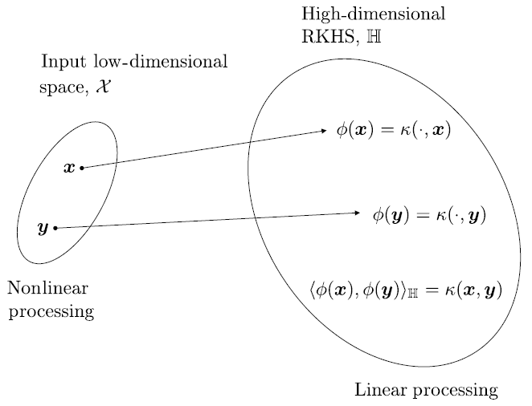
Empleando este tipo de mapeo a nuestro problema, calculamos operaciones de producto interno en \(H\) en una manera eficiente, vía evaluación de funciones sobre el espacio de baja dimensión.
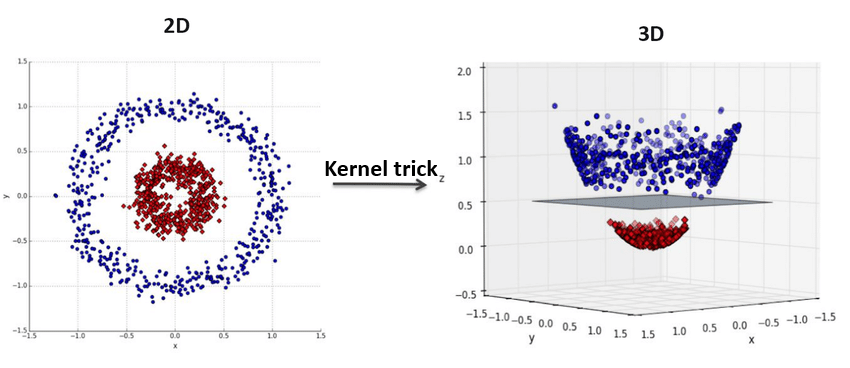
Fig. 6.1 Ilustración de la propiedad kernel trick. Fuente [Hachimi et al., 2020].#
Property 6.1
El mapeo \(\Phi(\cdot)\) satisface las siguientes propiedades
Mapea implícitamente inputs (datos de entrenamiento) en un espacio RKHS
Soluciona tareas de estimación lineal en \(H\), involucrando las imágenes:
Proyecta el algoritmo que soluciona problemas de parámetros desconocidos, en términos del producto interno en la forma:
Considera la evaluación kernel como el producto interno:
Nótese que este procedimiento de mapeo explicito es necesario para calcular la operación kernel en el último paso. La forma especifica de \(\kappa(\cdot,\cdot)\) no concierne en el análisis.
Example 6.1
Considere el caso del espacio de 2 dimensiones y el mapeo
Entonces, dados los vectores \(\boldsymbol{x}=(x_{1}, x_{2})^{T}\) y \(\boldsymbol{y}=(y_{1}, y_{2})^{T}\), es facil ver que
Es decir, el producto interior en el espacio tridimensional, después del mapeo, está dado en términos de una función de las variables en el espacio original.
Property 6.2
Sea \(\mathcal{X}\) un conjunto de puntos. Típicamente, \(\mathcal{X}\subseteq\mathbb{R}^{l}\) es compacto, esto es, cada sucesión en \(X\) tiene una subsucesión convergente. Sea \(\kappa\) la función
La función \(\kappa\) es llamada kernel definido positivo si satisface
para cualquier número real \(a_{n}, a_{m}\) y cualquier punto \(x_{n}, x_{m}\in\mathcal{X}\) y cualquier \(N\in\mathbb{N}\). O equivalentemente, si definimos la matriz \(K\), de orden \(N\)
\(a^{T}Ka\geq0\), donde \(a=(a_{1}, a_{2},\dots, a_{N})^{T}\).
Example 6.2
Los siguientes son algunos ejemplos típicos de funciones kernel, las cuales son comúnmente usadas en varias aplicaciones. Estas funciones kernel son utilizadas en Python para los modelos SVC y SVR (ver kernel-functions).
El kernel gaussiano está entre las más populares y está dado por la función
\[ \kappa(\boldsymbol{x}, \boldsymbol{y})=\exp\left(-\frac{\|\boldsymbol{x}-\boldsymbol{y}\|^{2}}{2\sigma^2}\right),\quad\sigma>0 \]El kernel polinomial homogéneo tiene la forma
\[ \kappa(\boldsymbol{x}, \boldsymbol{y})=(\boldsymbol{x}^{T}\boldsymbol{y})^{r}, \]donde \(r\) es un parámetro.
El kernel polinómico no-homogéneo tiene la forma
\[ \kappa(\boldsymbol{x}, \boldsymbol{y})=(\boldsymbol{x}^{T}\boldsymbol{y}+c)^{r}, \]donde \(c\geq0,~r\) son parámetros.
El kernel laplaciano está dado por
\[ \kappa(\boldsymbol{x}, \boldsymbol{y})=\exp(-t\|\boldsymbol{x}-\boldsymbol{y}\|), \]donde \(t>0\) es un parámetro.
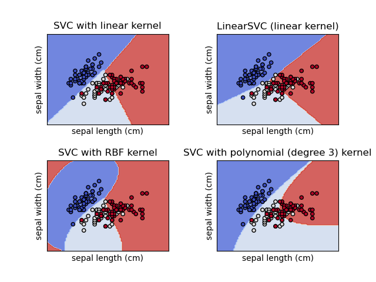
Fig. 6.2 SVC y LinearSVC para clasificación en un conjunto de datos. Ver scikit-learn.#
6.9. Construcción de kernels#
Además de los ejemplos previos, se pueden construir otros kernels aplicando las siguientes propiedades
Si
\[\begin{split} \kappa_{1}(\boldsymbol{x}, \boldsymbol{y}):\mathcal{X}\times\mathcal{X}\mapsto\mathbb{R}\\ \kappa_{1}(\boldsymbol{x}, \boldsymbol{y}):\mathcal{X}\times\mathcal{X}\mapsto\mathbb{R}\end{split}\]son kernels, entonces
\[\begin{split} \kappa(\boldsymbol{x}, \boldsymbol{y})=\kappa_{1}(\boldsymbol{x}, \boldsymbol{y})+\kappa_{2}(\boldsymbol{x}, \boldsymbol{y})\\ \kappa(\boldsymbol{x}, \boldsymbol{y})=\alpha\kappa_{1}(\boldsymbol{x}, \boldsymbol{y})\end{split}\]y
\[ \kappa(\boldsymbol{x}, \boldsymbol{y})=\kappa_{1}(\boldsymbol{x}, \boldsymbol{y})\kappa_{2}(\boldsymbol{x}, \boldsymbol{y}), \]son kernels.
Sea
\[ f:\mathcal{X}\mapsto\mathbb{R} \]entonces
\[ \kappa(\boldsymbol{x}, \boldsymbol{y})=f(\boldsymbol{x})f(\boldsymbol{y}) \]es un kernel
Sea una función
\[ g:\mathcal{X}\mapsto\mathbb{R}^{l} \]y una función kernel
\[ \kappa_{1}(\cdot, \cdot):\mathbb{R}^{l}\times\mathbb{R}^{l}\mapsto\mathbb{R}. \]Entonces
\[ \kappa(\boldsymbol{x}, \boldsymbol{y})=\kappa_{1}(g(\boldsymbol{x}), g(\boldsymbol{y})) \]es también un kernel.
Sea \(A\) una matriz definida positiva con dimensión \(l\times l\). Entonces
\[ \kappa(\boldsymbol{x}, \boldsymbol{y})=\boldsymbol{x}^{T}A\boldsymbol{y} \]es un kernel.
Si
\[ \kappa_{1}(\boldsymbol{x}, \boldsymbol{y}):\mathcal{X}\times\mathcal{X}\mapsto\mathbb{R}, \]entonces
\[ \kappa(\boldsymbol{x}, \boldsymbol{y})=\exp(\kappa_{1}(\boldsymbol{x}, \boldsymbol{y})) \]es también un kernel, y si \(p(\cdot)\) es un polinomio con coeficientes no negativos,
\[ \kappa(\boldsymbol{x}, \boldsymbol{y})=p(\kappa_{1}(\boldsymbol{x}, \boldsymbol{y})) \]también es un kernel.
Para mas información sobre los kernel y su construción (ver [Hofmann et al., 2008, Shawe-Taylor et al., 2004, Slavakis et al., 2014]).
6.10. Teorema de representación#
El teorema que se presentará en esta sección es de gran importancia desde un punto de vista práctico. Este nos permite llevar a cabo, optimización empírica de funciones de pérdida, basado en un conjunto finito de puntos de entrenamiento, en una manera muy eficiente si la función a estimar pertenece a un espacio de dimensión alta o incluso infinita \(H\).
Theorem 6.1
Sea
una función arbitraria, estrictamente monotona creciente. Sea también
una función de pérdida. Entonces, cada minimizador \(f\in H\), de una tarea de minimización regularizada
admite una representación de la forma
donde \(\theta_{n}\in\mathbb{R},~n=1,2,\dots,N\). La regularización de la forma \(\Omega(\|f\|^{2})\) es una función cuadrática, y por lo tanto estrictamente monotona en el intervalo \([0, \infty)\).
Demostración
Sea
Dado que cada \(\kappa(\cdot, \boldsymbol{x}_{i})\in H,~i=1,2,\dots,N,~A\subseteq H\) y \(N<\infty\), entonces, \(A\) es cerrado.
Por Teorema de descomposición ortogonal, como \(A\) es un subespacio cerrado de \(H\), entonces, \(H=A\oplus A^{T}\). Esto es, si \(f\in H\) entonces
donde \(f_{\perp}\) es la parte de \(f\) que es ortogonal a \(A\).
Usando la propiedad reproductora (6.1) se tiene que \(\forall f\in H\)
Nótese que la propiedad de reproducción garantiza que en los puntos de entrenamiento el valor de \(f\) no depende de \(f_{\perp}\), y, por lo tanto, tampoco el primer término de \(\min_{f\in H}J(f)\) en (6.2).
Además, para todo \(f_{\perp}\) tenemos que:
Por lo tanto para cualquier selección de \(\theta_{n},~n=1,2,\dots,N\), la función de coste es minimizada por \(f_{\perp}=0\).
Observation 6.1
La importancia de este teorema radica en que, para optimizar \(J(f)\) en (6.2) con respecto a \(f\), usamos la expresión \(f(\cdot)\) en (6.1) y la minimización es llevada a cabo con respecto a los parámetros \(\theta_{n},~n=1,2,\dots,N\).
En casos que la regularización no es necesaria, usualmente un término de sesgo es agregado y se supone que la función a minimizar admite la representación
\[ \tilde{f}=f+b,\quad f(\cdot)=\sum_{n=1}^{N}\theta_{n}\kappa(\cdot, \boldsymbol{x}_{n}) \]
La esencia del siguiente teorema es expandir la solución en dos partes. Una que pertenece al RKHS, \(H\), y otra que está dada como una combinación lineal de un conjunto de funciones preseleccionadas.
Theorem 6.2 (Teorema de representación semiparamétrico)
Supongamos que adicionalmente a los supuestos adoptados en el Theorem 6.1, es dado el siguiente conjunto de funciones reales
con la propiedad que la matriz de \(N\times M\) con elementos \(\varphi_{m}(\boldsymbol{x}_{n})\), \(~n=1,2,\dots,N\), \(~m=1,2,\dots,M\), tiene rango \(M\). Entonces, cualquier
que soluciona la tarea de minimización
admite la representación
Observation 6.2
Un ejemplo de aplicación exitosa de este teorema fue demostrada en el contexto de procesamiento de imágenes [Bouboulis et al., 2010]. Un conjunto de funciones no lineales en lugar de \(\psi_{m}\) fueron usadas para detección de bordes en una imagen con (saltos no suaves). La parte de \(f\) que pertenece al espacio RKHS es usada para las partes suaves en la imagen.
6.11. Regresión ridge con Kernel#
En esta sección abordaremos la tarea de regresión ridge en un espacio general RKHS. El camino a seguir es el usado típicamente para extender técnicas, las cuales han sido desarrolladas para modelos lineales, a espacios más generales RKSH.
Sea \((y_{n}, \boldsymbol{x}_{n})\in\mathbb{R}\times\mathbb{R}^{l}\) la representación de un mecanismo de generación de datos, modelados vía tarea de regresión no lineal
\[ y_{n}=g(\boldsymbol{x}_{n})+\eta_{n},\quad n=1,2,\dots,N. \]Denotemos por \(f\) es el estimador de la función \(g\) desconocida. \(f\) es llamada la hipótesis y \(H\) el espacio de hipótesis, donde \(f\) es buscada. Supongamos que \(f\) está en RKHS y está asociada con el kernel
Por el teorema de representación se tiene que
De acuerdo a la regresión ridge con kernel, los coeficientes desconocidos son estimados por medio de la siguiente tarea
(6.3)#\[ \hat{\theta}=\text{argmin}_{\theta} J(\theta),\quad J(\theta)=\sum_{n=1}^{N}\left(y_{n}-\sum_{m=1}^{N}\theta_{m}\kappa(\boldsymbol{x}_{n}, \boldsymbol{x}_{m})\right)^{2}+C\langle f, f\rangle, \]donde \(C\) es el parámetro de regularización. La Ecuación (6.3) puede reescribirse como
(6.4)#\[ J(\theta)=(\boldsymbol{y}-K\theta)^{T}(\boldsymbol{y}-K\theta)+C\theta^{T}K\theta, \]donde \(\boldsymbol{y}=(y_{1}, y_{2},\dots, y_{N})^{T}\) y \(\theta=(\theta_{1}, \theta_{2}, \dots,\theta_{M})^{T}\), \(K\) es la matriz kernel tal que \(\langle\kappa(\cdot, \boldsymbol{x}_{m}), \kappa(\cdot, \boldsymbol{x}_{m})\rangle=\kappa(\boldsymbol{x}_{m}, \boldsymbol{x}_{n})\), y \(y\) es determinada por la función kernel y los valores de entrenamiento.
Minimizando \(J(\theta)\) con respecto a \(\theta\) y suponiendo que \(K^{T}=K\) es invertible, utilizando el mismo procedimiento en la regresión ridge, tenemos que
Una vez \(\hat{\theta}\) es obtenido, dado un vector \(\boldsymbol{x}\in\mathbb{R}^{l}\) la correspondiente predicción de la variable dependiente está dada por:
\[ \hat{\boldsymbol{y}}=\sum_{n=1}^{N}\hat{\theta}_{n}\kappa(\boldsymbol{x}, \boldsymbol{x}_{n})=\theta^{T}\boldsymbol{\kappa}(\boldsymbol{x})=\boldsymbol{y}^{T}(K+CI)^{-1}\boldsymbol{\kappa}(\boldsymbol{x}), \]donde \(\boldsymbol{\kappa}(\boldsymbol{x})=(\kappa(\boldsymbol{x},\boldsymbol{x}_{1}),\dots,\boldsymbol{\kappa}(\boldsymbol{x}, \boldsymbol{x}_{N}))^{T}\).
6.12. Regresión de vectores de soporte#
Método de mínimos módulos
El método de mínimos cuadrados no es siempre el mejor criterio de optimización, debido a que, en presencia de ruido no Gaussiano con colas largas y por lo tanto número creciente de outliers, la dependencia cuadrática de el método se sesga hacia valores asociados con presencia de outliers
Una manera de darle solución a este problema es escoger una función de pérdida que se ajuste mejor al modelo del ruido (ver Huber 1992, [Huber, 1992]). Bajo el supuesto de que el ruido tiene función de densidad de probabilidad (fdp) simétrica, la tarea optima de regresión es obtenida minimizando la función de pérdida
\[ \mathcal{L}(y, f(\boldsymbol{x}))=|y-f(\boldsymbol{x})| \]la cual es conocida como el método de mínimos módulos.
Pérdida de Huber
Huber demostró que si el ruido tiene dos componentes: Gaussiana y otra fdp arbitraria (simétrica), entonces la mejor función de pérdida en el sentido minimax está dada por:
\[\begin{split} \mathcal{L}(y, f(\boldsymbol{x}))= \begin{cases} \displaystyle{\varepsilon|y-f(\boldsymbol{x})|-\varepsilon^{2}/2} & \text{si}~|y-f(\boldsymbol{x})|>\varepsilon,\\[2mm] \displaystyle{|y-f(\boldsymbol{x})|/2-\varepsilon^{2}/2} & \text{si}~|y-f(\boldsymbol{x})|\leq\varepsilon, \end{cases} \end{split}\]para algún parámetro \(\varepsilon\). Esta es conocida como función de pérdida de Huber.
Pérdida \(\varepsilon\)-insensible
Una función de pérdida que se aproxima a la de Huber y tiene excelentes propiedades computacionales es llamada función de pérdida lineal \(\varepsilon\)-insensible y está dada por
(6.5)#\[\begin{split} \mathcal{L}(y, f(\boldsymbol{x}))= \begin{cases} |y-f(\boldsymbol{x})|-\varepsilon & \text{si}~|y-f(\boldsymbol{x})|>\varepsilon\\[2mm] 0 & \text{si}~|y-f(\boldsymbol{x})|\leq\varepsilon \end{cases} \end{split}\]y la función de pérdida cuadrática \(\epsilon\)-insensible
\[\begin{split} \mathcal{L}(y, f(\boldsymbol{x}))= \begin{cases} |y-f(\boldsymbol{x})|^{2}-\varepsilon & \text{si}~|y-f(\boldsymbol{x})|>\varepsilon\\[2mm] 0 & \text{si}~|y-f(\boldsymbol{x})|\leq\varepsilon \end{cases} \end{split}\]la cuales coinciden con la función de pérdida de mínimos módulos para \(\varepsilon=0\) y es cercana a la función de pérdida de Huber para \(\varepsilon<1\).

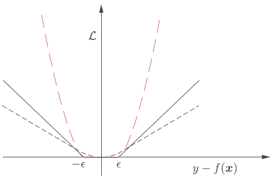
Fig. 6.3 Función de pérdida de Huber (gris punteado). Función de pérdida lineal \(\varepsilon\)-insensible (gris completo). Función de pérdida cuadrática \(\varepsilon\)-insensible (rojo) para \(\varepsilon = 0.7\). Fuente [Theodoridis, 2020].#
Observación
La función de pérdida \(\epsilon\)-insensible se utiliza en escenarios donde queremos que nuestro modelo tolere errores hasta cierto punto. La pérdida \(\epsilon\)-insensible permite que el modelo sea menos sensible a valores atípicos o puntos de datos ruidosos
La función de pérdida \(\epsilon\)-insensible proporciona una herramienta útil para construir modelos que sean robustos, flexibles y capaces de equilibrar la precisión con la generalización, especialmente en situaciones donde los datos pueden contener ruido o valores atípicos.
6.13. Regresión óptima lineal \(\varepsilon\)-insensible#
Usaremos la función de pérdida lineal \(\varepsilon\)-insensible (6.5) para cuantificar el error de desajuste del modelo. El valor de \(\epsilon\) determina la cantidad de “slack” (grado de error) que se permite.
Trataremos la tarea de regresión
\[ y=g(\boldsymbol{x})+\eta_{n}, \]usando un model lineal de la forma:
\[ f(\boldsymbol{x})=\boldsymbol{\theta}^{T}\boldsymbol{x}+\theta_{0}. \]La solución más general en la que \(f\) es una función en RKHS será obtenida vía kernel trick (producto interno reemplazado por evaluación de kernel).
Introducimos ahora dos conjuntos de variables auxiliares
(6.6)#\[ \text{Si}~ y_{n}-\boldsymbol{\theta}^{T}\boldsymbol{x}_{n}-\theta_{0}\geq\varepsilon,~\text{definimos}~\tilde{\xi}_{n}~\text{tal que},\quad y_{n}-\boldsymbol{\theta}^{T}\boldsymbol{x}_{n}-\theta_{0}\leq\varepsilon+\tilde{\xi}_{n}. \]Nótese que idealmente, deseamos seleccionar \(\boldsymbol{\theta}, \theta_{0}\) tales que \(\tilde{\xi}_{n}=0\), dado que este valor entregaría la contribución del respectivo término en la función de pérdida igual a cero, pues \(\mathcal{L}(y, f(\boldsymbol{x}))=0\) si \(|y-f(\boldsymbol{x})|\leq\varepsilon\). Análogamente,
(6.7)#\[ \text{Si}~ y_{n}-\boldsymbol{\theta}^{T}\boldsymbol{x}_{n}-\theta_{0}\leq-\varepsilon,~\text{definimos}~\xi_{n}~\text{tal que},\quad\boldsymbol{\theta}^{T}\boldsymbol{x}_{n}+\theta_{0}-y_{n}\leq\varepsilon+\xi_{n}. \]
Estamos ahora listos para formular la tarea de minimización para el correspondiente coste empírico, regularizado por la norma de \(\boldsymbol{\theta}\), el cual es proyectado en términos de las variables auxiliares como:
El término \(\frac{1}{2}\|\boldsymbol{\theta}\|^{2}\), surge de la necesidad de maximizar el margen asociado al hiperplano que separa dos clases (ver sección máquinas de vectores de soporte Vapnik and Chervonenkis 1960s).
Dicho margen: \(2/\|\boldsymbol{\theta}\|\), el cual, en problemas de clasificación, se desea maximizar, es equivalente a minimizar la norma \(\frac{1}{2}\|\boldsymbol{\theta}\|^2\) para el caso de modelos regresivos. El factor \(\frac{1}{2}\) es incluido de forma numéricamente conveniente, y no altera la solución. A este tipo de problemas se les denomina de programación cuadrática.
¿Por qué maximizar el margen?
Maximizar el margen permite lograr un buen rendimiento de generalización. El margen representa el nivel de confianza del clasificador, y maximizarlo ayuda a minimizar el error de generalización.
Maximizar el margen corresponde a minimizar la Dimensión VC (Vapnik-Chervonenkis), que es una medida de la capacidad o complejidad del modelo. Al maximizar el margen, SVM busca encontrar el límite de decisión más simple que separa las clases de manera efectiva, lo que conduce a una mejor generalización a datos no vistos.
Maximizar el margen ayuda a crear un límite de decisión que es robusto al ruido y a los valores atípicos en los datos de entrenamiento. Al enfocarse en los puntos de datos cerca del margen, SVM puede tolerar mejor el ruido y los valores atípicos, lo que lleva a un clasificador más confiable y preciso.

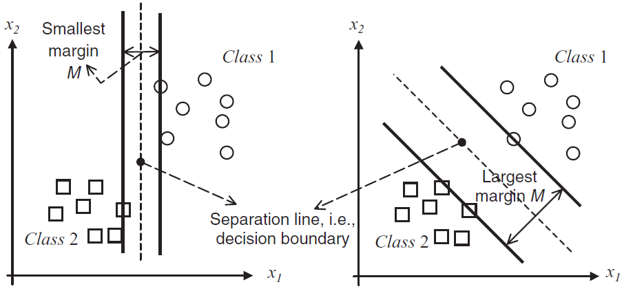
Fig. 6.4 Dos líneas de separación: una buena con un margen grande (derecha) y una línea de separación menos aceptable con un margen pequeño (izquierda).#
Las variables auxiliares, \(\tilde{\xi}_{n}\) y \(\xi_{n},~ n=1,2,\dots,N\) que miden el exceso de error con respecto a \(\varepsilon\), son conocidas como variables de relajación. Nótese que cualquier contribución de la función de coste, para un error obtenido con un valor absoluto menor o igual que \(\varepsilon\) es cero. La tarea de optimización previa, intenta estimar \(\boldsymbol{\theta}, \theta_{0}\) tal que valores de error mayores que \(\epsilon\) y menores que \(-\epsilon\) sean minimizados.
Por lo tanto, la tarea de optimización es equivalente a minimizar la función de pérdida empírica
\[ \frac{1}{2}\|\boldsymbol{\theta}\|^{2}+C\sum_{n=1}^{N}\mathcal{L}(y_{n}, \boldsymbol{\theta}^{T}\boldsymbol{x}_{n}+\theta_{0}), \]donde la función de pérdida \(\mathcal{L}\) es \(\varepsilon\)-insensible.
Nótese que debido a que el problema de optimización con restricción involucra las variables de relajación con valores históricos, empleamos el kernel trick.
Solución
La solución de la tarea de optimización es obtenida introduciendo los multiplicadores de Lagrange y formando el correspondiente Lagrangiano. Habiendo obtenido los multiplicadores, la solución estaría dada por
\[ \hat{\boldsymbol{\theta}}=\sum_{n=1}^{N}(\tilde{\lambda}_{n}-\lambda_{n})\boldsymbol{x}_{n}, \]donde \(\tilde{\lambda}_{n},\lambda_{n},~ n=1,2,\dots,N\), son los multiplicadores asociados con cada una de las restricciones.
Los multiplicadores de Lagrange son distintos de cero, solo para puntos \(\boldsymbol{x}_{n}\), que corresponden a valores de error ya sean iguales o mayores que \(\varepsilon\). Estos son conocidos como vectores de soporte.
Puntos para los que el valor del puntaje de error es menor que \(\varepsilon\), corresponden a multiplicadores de Lagrange ceros y por lo tanto no son vectores de soporte y no participan en la construcción de la función de decisión

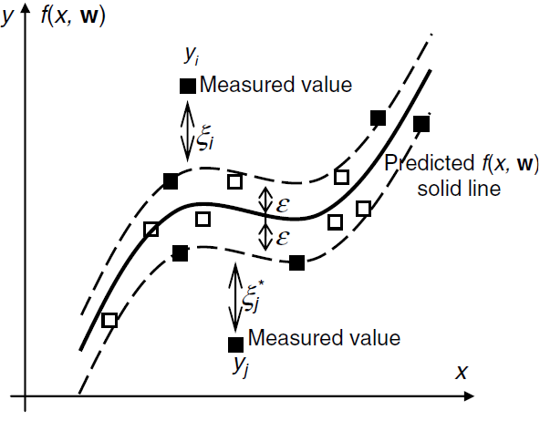
Fig. 6.5 Parámetros utilizados en la regresión de vectores de soporte (unidimensional). Cuadrados rellenos son vectores de soporte, y los vacíos no lo son. Por lo tanto, los SV sólo pueden aparecer en el límite del tubo o fuera del tubo#
El término de sesgo \(\hat{\theta}_{0}\) puede ser obtenido a partir de las ecuaciones
(6.8)#\[\begin{split} \begin{align} y_{n}-\boldsymbol{\theta}^{T}\boldsymbol{x}_{n}-\theta_{0}&=\varepsilon,\\[2mm] \boldsymbol{\theta}^{T}\boldsymbol{x}_{n}+\theta_{0}-y_{n}&=\varepsilon, \end{align} \end{split}\]donde \(n\) recorre todos los puntos que forman un subconjunto de vectores de soporte, esto es, puntos asociados con:
\[ \tilde{\lambda}_{n}>0,~(\lambda_{n}>0)\quad\text{y}\quad\tilde{\xi}_{n}=0,~(\xi_{n}=0). \]En la práctica, \(\hat{\theta}_{0}\) es obtenido a partir del promedio de todas las ecuaciones en (6.8).
Una vez \(\hat{\boldsymbol{\theta}}, \hat{\theta}_{0}\) han sido obtenidos, estamos listos para realizar predicciones. Dado un valor \(\boldsymbol{x}\), primero desarrollamos el mapeo (implícito) usando el mapeo de características \(\boldsymbol{x}\longmapsto\kappa(\cdot, \boldsymbol{x})\) obtenemos
\[ \hat{y}(\boldsymbol{x})=\langle\hat{\boldsymbol{\theta}}, \kappa(\cdot, \boldsymbol{x})\rangle+\hat{\theta}_{0}, \]o bien,
\[ \hat{y}(\boldsymbol{x})=\sum_{n=1}^{N_{s}}(\tilde{\lambda}_{n}-\tilde{\lambda}_{n})\kappa(\boldsymbol{x}, \boldsymbol{x}_{n})+\hat{\theta}_{0},\quad\text{Predicción SVR}, \]donde \(N_{s}\leq N\), es el número de multiplicadores de Lagrange distintos de cero. Nótese que esta última es una expansión en términos de funciones kernel no lineales.
Solución de la tarea de optimización
La tarea de optimización con desigualdades de restricción, satisface las condiciones de Karush–Kuhn–Tucker (KKT)
\[\begin{split} \begin{align*} &\frac{\partial L}{\partial\boldsymbol{\theta}}=\boldsymbol{0},~\frac{\partial L}{\partial\theta_{0}}=0,~\frac{\partial L}{\partial\tilde{\xi}_{n}}=0,~\frac{\partial L}{\partial\xi_{n}}=0,\\[2mm] &\tilde{\lambda}_{n}(y_{n}-\boldsymbol{\theta}^{T}\boldsymbol{x}_{n}-\theta_{0}-\varepsilon-\tilde{\xi}_{n})=0,\quad n=1,2,\dots,N,\\[2mm] &\lambda_{n}(\boldsymbol{\theta}^{T}\boldsymbol{x}_{n}+\theta_{0}-y_{n}-\varepsilon-\xi_{n})=0,\quad n=1,2,\dots,N,\\[2mm] &\tilde{\mu}_{n}\tilde{\xi}_{n}=0,\quad n=1,2,\dots,N,\\[2mm] &\mu_{n}\xi_{n}=0,\quad n=1,2,\dots,N,\\[2mm] &\tilde{\lambda}_{n}\geq0,~\lambda_{n}\geq0,~\tilde{\mu}_{n}\geq0,~\mu_{n}\geq0,\quad n=1,2,\dots,N, \end{align*} \end{split}\]con respecto al Lagrangiano
(6.9)#\[\begin{split} \begin{align*} L(\boldsymbol{\theta}, \theta_{0}, \tilde{\xi}, \xi, \lambda, \mu)&=\frac{1}{2}\|\boldsymbol{\theta}\|^{2}+C\left(\sum_{n=1}^{N}{\xi}_{n}+\sum_{n=1}^{N}\tilde{\xi}_{n}\right)\\ &+\sum_{n=1}^{N}\tilde{\lambda}_{n}(y_{n}-\boldsymbol{\theta}^{T}\boldsymbol{x}_{n}-\theta_{0}-\varepsilon-\tilde{\xi}_{n})\\ &+\sum_{n=1}^{N}\lambda_{n}(\boldsymbol{\theta}^{T}\boldsymbol{x}_{n}+\theta_{0}-y_{n}-\varepsilon-\xi_{n})\\ &-\sum_{n=1}^{N}\tilde{\mu}_{n}\tilde{\xi}_{n}-\sum_{n=1}^{N}\mu_{n}\xi_{n}, \end{align*} \end{split}\]donde \(\tilde{\lambda}_{n},~\lambda_{n},~\tilde{\mu}_{n},~\mu_{n}\) son los multiplicadores de Lagrange.
Sumando las restricciones (multiplicando cada restricción por \(\tilde{\lambda}_{n},\lambda_{n}, \tilde{\xi}_{n}, \xi_{n}\)), se tiene que:
\[ \tilde{\lambda}_{n}\lambda_{n}((y_{n}-\boldsymbol{\theta}^{T}\boldsymbol{x}_{n}-\theta_{0}-\varepsilon)(\xi_{n}-\tilde{\xi}_{n})-2\tilde{\xi}_{n}\xi_{n})=0, \]dado que los multiplicadores de Lagrange que participan en la solución \(\hat{\theta}\) son aquellos distintos de cero, para puntos \(\boldsymbol{x}_{n}\) correspondientes a valores de errores que sean mayores o iguales que \(\varepsilon\), esto es, por ejemplo \((y_{n}-\boldsymbol{\theta}^{T}\boldsymbol{x}_{n}-\theta_{0})\geq\varepsilon,~\lambda_{n}\neq0\).
Si \(y_{n}-\boldsymbol{\theta}^{T}\boldsymbol{x}_{n}-\theta_{0}=\varepsilon\) (similar para \(\boldsymbol{\theta}^{T}\boldsymbol{x}_{n}+\theta_{0}-y_{n}=\varepsilon\)), entonces
\[ (i)~\tilde{\lambda}_{n}\lambda_{n}=0\quad\text{o}\quad(ii)~(y_{n}-\boldsymbol{\theta}^{T}\boldsymbol{x}_{n}-\theta_{0}-\varepsilon)(\xi_{n}-\tilde{\xi}_{n})-2\tilde{\xi}_{n}\xi_{n}=0 \]Si \(y_{n}-\boldsymbol{\theta}^{T}\boldsymbol{x}_{n}-\theta_{0}>\varepsilon\) (similar para \(y_{n}-\boldsymbol{\theta}^{T}\boldsymbol{x}_{n}-\theta_{0}<-\varepsilon\)), entonces \((i)~\tilde{\lambda}_{n}\lambda_{n}=0\). Además, basados en la tarea de optimización, seleccionando \(\boldsymbol{\theta}^{T}, \theta_{0}\) tales que \(y_{n}-\boldsymbol{\theta}^{T}\boldsymbol{x}_{n}-\theta_{0}-\varepsilon\rightarrow0\) se tiene que
\[ (ii)~(y_{n}-\boldsymbol{\theta}^{T}\boldsymbol{x}_{n}-\theta_{0}-\varepsilon)(\xi_{n}-\tilde{\xi}_{n})-2\tilde{\xi}_{n}\xi_{n}=0\Rightarrow\tilde{\xi}_{n}\xi_{n}=0. \]
Esto es
Derivando el Lagrangiano (6.9) tenemos los resultados
Para proceder a calcular los multiplicadores asociados a la tarea de optimización, consideraremos la
Representación dual de Walfe. En esta representación es considerado el término de sesgo \(\theta_{0}=0\). Además, consideraremos solo el uso de vectores de soportes, esto es valores asociados a \(\boldsymbol{\xi}_{n}=\tilde{\boldsymbol{\xi}}_{n}=0\), para proceder con la representación dual respectiva. Esta representación es obtenida a partir del Lagrangiano \(L(\boldsymbol{\theta}, \theta_{0}, \tilde{\xi}, \xi, \lambda, \mu)\).
Property 6.3 (Representación dual de Walfe)
Un problema de programación convexa es equivalente a
\[\begin{split} \max_{\lambda\geq0}&\quad L(\boldsymbol{\theta}, \boldsymbol{\lambda}),\\ \text{sujeto a}&\quad\frac{\partial}{\partial\boldsymbol{\theta}}L(\boldsymbol{\theta},\boldsymbol{\lambda})=\boldsymbol{0}. \end{split}\]La última ecuación garantiza que \(\boldsymbol{\theta}\) es un mínimo del Lagrangiano.
Considere el siguiente problema cuadrático:
\[\begin{split} \begin{align*} \text{minimizar:}&\quad\frac{1}{2}\boldsymbol{\theta}^{T}\boldsymbol{\theta},\\ \text{sujeto a:}&\quad A\boldsymbol{\theta}\geq b. \end{align*} \end{split}\]el cual admite la siguiente representación de Wolfe
\[\begin{split} \begin{align*} \text{minimizar:}&\quad\frac{1}{2}\boldsymbol{\theta}^{T}\boldsymbol{\theta}-\lambda^{T}(A\boldsymbol{\theta}-\boldsymbol{b}),\\ \text{sujeto a:}&\quad\theta-A^{T}\lambda=0. \end{align*} \end{split}\]Solucionando la tarea de optimización de Wolfe con respecto a \(\boldsymbol{\theta}\), podemos escribir el problema dual involucrando solo multiplicadores de Lagrange. De esta forma obtenemos otro problema cuadrático, pero más simple
\[\begin{split} \begin{align*} \max_{\lambda}&\left\{\displaystyle{-\frac{1}{2}\boldsymbol{\lambda}^{T}AA^{T}\boldsymbol{\lambda}+\boldsymbol{\lambda}^{T}\boldsymbol{b}}\right\}\\ \text{sujeto a:}&\quad\lambda\geq0. \end{align*} \end{split}\]
Nótese en la propiedad anterior que, \(\partial_{\boldsymbol{\theta}}(\frac{1}{2}\boldsymbol{\theta}^{T}\boldsymbol{\theta}-\lambda^{T}(A\boldsymbol{\theta}-\boldsymbol{b}))=\boldsymbol{\theta}-A^{T}\lambda\). Consideremos ahora la representación dual de Wolfe asociada a la tarea de optimización (6.9). Con este fin, consideremos \(A\boldsymbol{\theta}=\boldsymbol{\theta}\boldsymbol{x_{n}}+\theta_{0}\) y \(b=y_{n}-\varepsilon\), con \(\tilde{\xi}_{n}, \xi_{n}=0\), con base en el estimador obtenido para \(\hat{\boldsymbol{\theta}}\), la tarea de optimización se convierte en la siguiente representación dual de Walfe
El primer producto interior es reemplazado por \(\kappa(\boldsymbol{x}_{n}, \boldsymbol{x}_{m})\) vía kernel trick. Nótese que la primera restricción proviene de la igualdad \(C-\tilde{\lambda}-\tilde{\mu}_{n}=0\), con la cual se tiene que
\[ 0\leq\tilde{\lambda}_{n}\leq\tilde{\lambda}_{n}+\tilde{\mu}_{n}\leq C\Rightarrow 0\leq\tilde{\lambda}_{n}\leq C, \]análogamente, \(0\leq\lambda_{n}\leq C,\quad n=1,2,\dots,N.\)
El primer término proviene la siguiente igualdad obtenida a partir del Lagrangiano, el segundo resulta de factorizar los términos que incluyen los autovalores, con \(\xi_{n}=\tilde{\xi}_{n}=0\) (
verifíquelo) (vectores de soporte)
Observación
La belleza de la forma de representación dual radica en que involucra los vectores de observación en forma de operaciones de producto interno. Así, cuando se resuelve la tarea en un
RKHS, (6.11) se convierte en
Las condiciones KKT transmiten información importante. Los multiplicadores de Lagrange, \(\tilde{\lambda}_{n},\lambda_{n}\), para puntos que obtienen un error menor que \(\varepsilon\), es decir,
Por lo tanto, los multiplicadores de Lagrange son distintos de cero solo para puntos que obtienen un error igual a \(\varepsilon~(\tilde{\xi}_{n}, \xi_{n} = 0)\) o valores más grandes (\(\tilde{\xi}_{n}, \xi_{n}>0\)) (vectores de soporte).
Debido a (6.10), ya sea \(\tilde{\xi}_{n}\) o \(\xi_{n}\) pueden ser distintos de cero, pero no ambos. Esto también se aplica a los multiplicadores de Lagrange correspondientes.
6.14. Regresión Kernel Ridge#
En esta sección abordaremos la regresión kernel ridge vía su representación dual. La regresión ridge en su representación primal puede ser proyectada como:
(6.12)#\[\begin{split} \begin{align*} \text{minimizar con respecto a}\quad\boldsymbol{\theta}, \boldsymbol{\xi}:&\quad J(\boldsymbol{\theta}, \boldsymbol{\xi})=\sum_{n=1}^{N}\xi_{n}^{2}+C\|\boldsymbol{\theta}\|^{2}\\ \text{sujeto a}:&\quad y_{n}-\boldsymbol{\theta}^{T}\boldsymbol{x}_{n}=\boldsymbol{\xi}_{n},\quad n=1,2,\dots,N, \end{align*} \end{split}\]con el siguiente Lagrangiano
\[ L(\boldsymbol{\theta}, \boldsymbol{\xi}, \lambda)=\sum_{n=1}^{N}\xi_{n}^{2}+C\|\boldsymbol{\theta}\|^{2}+\sum_{n=1}^{N}\lambda_{n}(y_{n}-\boldsymbol{\theta}^{T}\boldsymbol{x}_{n}-\xi_{n}),\quad n=1,2,\dots,N. \]
Calculando las derivadas parciales \(\partial_{\boldsymbol{\theta},\xi_{n}}=0,\, n=1,2,\dots,N\) se tiene que
Para obtener los multiplicadores de Lagrange, consideramos la siguiente formulación dual, obtenida al reemplazar los estimadores \(\hat{\boldsymbol{\theta}}\) y \(\xi_{n}\) en la tarea de optimización (6.12)
La representación dual entrega la siguiente formulación
\[ \text{minimizar respecto a}~\lambda:\quad\sum_{n=1}^{N}\lambda_{n}y_{n}-\frac{1}{4C}\sum_{n=1}^{N}\sum_{m=1}^{N}\lambda_{n}\lambda_{m}\kappa(\boldsymbol{x}_{n}, \boldsymbol{x}_{m})-\frac{1}{4}\sum_{n=1}^{N}\lambda_{n}^{2}, \]aquí \(\boldsymbol{x}_{n}^{T}\boldsymbol{x}_{m}\) fue reemplazado por \(\kappa(\boldsymbol{x}_{n}, \boldsymbol{x}_{m})\), de acuerdo al kernel trick.
Diferenciando con respecto a \(\lambda\) obtenemos:
Dado que \(\displaystyle{\boldsymbol{\hat{\theta}}=\frac{1}{2C}\sum_{n=1}^{N}\lambda_{n}\boldsymbol{x}_{n}}\), usando kernel trick se tiene que
\[ \hat{y}(\boldsymbol{x})=\langle\boldsymbol{\hat{\theta}}, \kappa(\cdot,\boldsymbol{x})\rangle=\left\langle\frac{1}{2C}\sum_{n=1}^{N}2C(\kappa(\cdot, \boldsymbol{x}_{n})+C)^{-1}y_{n}, \kappa(\cdot, \boldsymbol{x}_{n})\right\rangle=\boldsymbol{y}^{T}(K+CI)^{-1}\kappa(\boldsymbol{x}). \]Nótese que en este caso no fue necesario el supuesto de invertibilidad para la matriz \(K\).
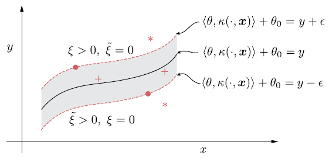
Fig. 6.6 Tubo alrededor de la curva de regresión no lineal. Los puntos fuera del tubo (denotados por estrellas) tienen o bien \(\tilde{\xi} > 0\) y \(\xi = 0\) o \(\xi > 0\) y \(\tilde{\xi} = 0\). El resto de los puntos tienen \(\tilde{\xi} = \xi = 0\) (SV). Los puntos que están dentro del tubo corresponden a multiplicadores de Lagrange iguales a cero.#
6.15. Máquinas de vectores de soporte#
Antes de abordar el modelo de clasificación, máquinas de vectores de soporte (SVM) revisemos la definición de un clasificador
Definition 6.4
Un clasificador, es una función definida como
donde para cada clase \(\omega\), se define su función discriminante \(f_{\omega}\). El grado de pertenencia del valor \(x\) a la clase \(\omega\) es \(f_{\omega}(x)\). Ademas \(\omega(x)\) es la clase a la que el objeto \(x\) pertenece en mayor grado.
Cuando en un método de clasificación Bayesiana desconocemos estadísticos subyacentes, una alternativa es usar técnicas de aprendizaje discriminante, y adoptar una función discriminante \(f\), que efectúa la clasificación correspondiente y trata de optimizarla, como se minimiza la función de pérdida empírica
Para una tarea de clasificación binaria, la función de pérdida \((0, 1)\), definida de la siguiente forma, puede ser utilizada en la tarea de optimización
El principal problema de esta función de pérdida es que su optimización resulta ser una tarea compleja, debido a que es discontinua. Se han utilizado alternativas para esta función de pérdida, con el fin de solventar este problema. En esta sección centraremos nuestra atención en la función de pérdida hinge definida como
Esto es, si el signo del producto entre el label real \((y)\) y el predicho por la función discriminante \((f(x))\) es positivo y mayor que un umbral definido por el usuario, \(\rho\geq0\), la función de pérdida es cero. En caso contrario, la función de pérdida exhibe un crecimiento lineal.

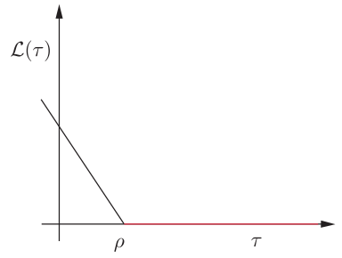
Fig. 6.7 Función de pérdida hinge, para la tarea de clasificación, \(\tau = y\boldsymbol{\theta}^{T}\boldsymbol{x}\).#
Consideraremos en esta sección, la función discriminante en el espacio RKHS
\[ f(\boldsymbol{x})=\theta_{0}+\langle\boldsymbol{\theta}, \phi(\boldsymbol{x})\rangle, \]donde \(\phi(\boldsymbol{x})\) es el mapeo de características. Proyectamos la tarea de optimización como un problema lineal en el espacio de inputs, \(\mathbb{R}^{l}\), y al final la información del kernel será implantada usando el kernel trick.
La tarea de diseñar un clasificador lineal, ahora es equivalente a minimizar la función de costo
Alternativamente, empleando variables de relajación (slack) y siguiendo un razonamiento similar a la regresión de vectores de soporte (SVR), minimizar (6.14) es equivalente a:
La constante \(C\) se encarga de maximizar el margen mientras que se evita el sobreajuste. Adoptaremos de ahora en adelante \(\rho=1\) sin pérdida de generalidad. Nótese que \(y_{n}(\boldsymbol{\theta}^{T}\boldsymbol{x}_{n}+\theta_{0})\geq1\) si \(\xi_{n}=0\), en este caso el margen de error sería nulo. Por otro lado, un margen de error es cometido si \(y_{n}(\boldsymbol{\theta}^{T}\boldsymbol{x}_{n}+\theta_{0})\leq 1\), correspondiente a \(\xi_{n}>0\). Por lo tanto, nuestro objetivo para la tarea de optimización es, encontrar \(\boldsymbol{\theta}, \theta_{0}, \xi_{n}\) óptimos, tales que \(\xi_{n}\) sea tan pequeño como sea posible.
6.16. Clases linealmente separables: Clasificador de máximo margen#
Asumiendo que las clases son linealmente separables, hay un número infinito de clasificadores que solucionan la tarea exactamente, sin error, en el conjunto de entrenamiento. Se puede ver que de estos infinitos hiperplanos que solucionan la tarea, podemos identificar un subconjunto tal que
\[ y_{n}(\boldsymbol{\theta}^{T}\boldsymbol{x}_{n}+\theta_{0})\geq 1,\quad n=1,2,\dots,N, \]el cual garantiza que \(\xi_{n}=0,~n=1,2,\dots,N\). Por lo tanto, para clases linealmente separables, la tarea de optimización previa es equivalente a
(6.15)#\[\begin{split} \begin{align*} \text{minimizar con respecto a}~\theta:&\quad\frac{1}{2}\|\boldsymbol{\theta}\|^{2}\\ \text{sujeto a:}&\quad y_{n}(\boldsymbol{\theta}^{T}\boldsymbol{x}_{n}+\theta_{0})\geq 1,\quad n=1,2,\dots,N. \end{align*} \end{split}\]
En otras palabras, de este conjunto infinito de clasificadores lineales (ver Fig. 6.8), los cuales solucionan la tarea de optimización, y clasifican correctamente todos los patrones, se selecciona aquel que tiene mínima norma.
Veremos mas adelante que, la norma \(\|\boldsymbol{\theta}\|\) está directamente relacionada con el margen formado por el respectivo clasificador. Cada hiperplano en el espacio está descrito por la ecuación
\[ f(\boldsymbol{x})=\boldsymbol{\theta}^{T}\boldsymbol{x}+\theta_{0}=0. \]

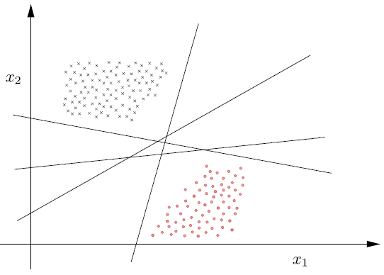
Fig. 6.8 Número infinito de clasificadores lineales que pueden clasificar correctamente todos los patrones de una clase linealmente separable.#
De la geometría analítica sabemos que la dirección en espacio es controlada por \(\boldsymbol{\theta}\) y su posición por \(\theta_{0}\). Además, de todos los hiperplanos que solucionan la tarea de optimización y tienen la misma dirección (i.e. comparten \(\boldsymbol{\theta}\)), seleccionamos \(\theta_{0}\) tal que, el hiperplano queda dentro de dos clases, de modo que su distancia a los puntos más cercanos es siempre la misma para las dos clases.

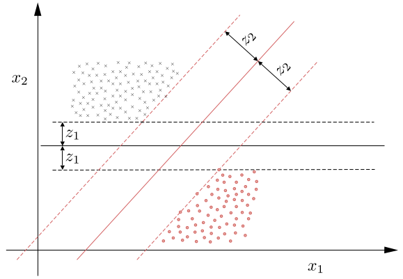
Fig. 6.9 Las líneas punteadas, \(\boldsymbol{\theta}^{T}\boldsymbol{x} + \theta_{0} =±1\), que pasan por los puntos más cercanos, son paralelas al clasificador respectivo y definen el margen (ancho de banda) \(2/\|\boldsymbol{\theta}\|\).#
De la geometría básica sabemos que la distancia de un punto \(\boldsymbol{x}\) al hiperplano está dada por
\[ z=\frac{|\boldsymbol{\theta}^{T}\boldsymbol{x}+\theta_{0}|}{\|\boldsymbol{\theta}\|} \]la cual es claramente cero cuando \(\boldsymbol{x}\) está dentro del hiperplano \(\boldsymbol{\theta}^{T}\boldsymbol{x}+\theta_{0}=0\). Donde los parámetros \(\boldsymbol{\theta}\) y \(\theta_{0}\) pueden ser escalados apropiadamente, por ejemplo, usando un factor, digamos, \(a\), sin afectar la geometría del plano.
De esta forma, podemos hacer la distancia del punto más cercano, de los puntos más cercanos entre las dos clases al hiperplano, igual a \(1/\|\boldsymbol{\theta}\|\), donde \(|\boldsymbol{\theta}^{T}\boldsymbol{x}+\theta_{0}|=1\).
Equivalentemente, el escalamiento garantiza que: \(f(\boldsymbol{x})=\pm 1\), si \(\boldsymbol{x}\) es el punto más cercano al hiperplano, y dependiendo de si el punto \(x\) pertenece a \(\omega_{1} (+1)\) o \(\omega_{2} (-1)\). Los dos hiperplanos se pueden visualizar en la Fig. 6.9 \((f(\boldsymbol{x})=\pm1)\). Estos dos hiperplanos definen el margen correspondiente de longitud \(2/\|\boldsymbol{\theta}\|\) para cada iteración.
Cualquier clasificador construido de la forma anterior, soluciona la tarea de optimización, y además satisface las siguientes propiedades:
Tiene un margen de longitud igual a: \(\displaystyle{1/\|\boldsymbol{\theta}\|+1/\|\boldsymbol{\theta}}\|\)
Además:
\[ \boldsymbol{\theta}^{T}\boldsymbol{x}_{n}+\theta_{0}\geq 1,~\boldsymbol{x}_{n}\in\omega_{1}~\text{y}~\boldsymbol{\theta}^{T}\boldsymbol{x}_{n}+\theta_{0}\leq-1,~\boldsymbol{x}_{n}\in\omega_{2} \]Por lo tanto la tarea de optimización (6.15) calcula el clasificador lineal que maximiza el margen sujeto a las respectivas restricciones.
Solución
Siguiendo pasos similares a SVR, la solución esta dada por, combinación lineal de un subconjunto de muestras de entrenamiento, esto es:
\[ \hat{\boldsymbol{\theta}}=\sum_{n=1}^{N_{s}}\lambda_{n}y_{n}\boldsymbol{x}_{n}, \]donde \(N_{s}\) es el número de multiplicadores de Lagrange distintos de cero.
Multiplicadores de Lagrange asociados a los puntos más cercanos al clasificador, esto es, puntos que satisfacen la restricción con igualdad \((y_{n}(\boldsymbol{\theta}^{T}\boldsymbol{x}_{n}+\theta_{0})=1)\), son distintos de cero. Estos son conocidos como vectores de soporte. Multiplicadores de Lagrange correspondientes a puntos tales que \((y_{n}(\boldsymbol{\theta}^{T}\boldsymbol{x}_{n}+\theta_{0})>1)\), son iguales a cero.
Para el caso mas general, en el espacio RKHS, tenemos que:
\[ \hat{\theta}(\cdot)=\sum_{n=1}^{N_{s}}\lambda_{n}y_{n}\kappa(\cdot, \boldsymbol{x}_{n}), \]estimación la cual entrega la siguiente regla de predicción. Dado un valor desconocido \(\boldsymbol{x}\), su clase es predicha de acuerdo al signo de:
\[ \hat{y}(\boldsymbol{x})=\sum_{n=1}^{N_{s}}\lambda_{n}y_{n}\kappa(\boldsymbol{x}, \boldsymbol{x}_{n})+\hat{\theta}_{0}:\quad\text{Predicción SVM}, \]donde \(\hat{\theta}_{0}\) es obtenido solucionando todas las restricciones con \(\lambda_{n}\neq0\), correspondientes a:
\[ y_{n}(\hat{\boldsymbol{\theta}}^{T}\boldsymbol{x}_{n}+\hat{\theta}_{0})-1=0,\quad n=1,2,\dots,N_{s}, \]la cual para el caso RKHS se convierte en:
(6.16)#\[ y_{n}\left(\sum_{m=1}^{N_{s}}\lambda_{m}y_{m}\kappa(\boldsymbol{x}_{m}, \boldsymbol{x}_{n})+\hat{\theta}_{0}\right)-1=0,\quad n=1,2,\dots,N_{s}, \]donde \(\hat{\theta}_{0}\) es obtenido por medio del promedio entre las soluciones de (6.16). Aunque la solución es única, los correspondientes multiplicadores \(\lambda_{m}\) pueden no ser únicos.
Finalmente el número de vectores de soporte está relacionado con la capacidad de generalización del clasificador. Entre mas pequeño es el número de vectores de soporte, mejor será la generalización esperada (ver [Koutroumbas and Theodoridis, 2008, 佐土原健, 2001]).
Tarea de optimización
Procedemos de forma similar a SVR. El Lagrangiano asociado a la tarea de clasificación está dado por:
Calculando las derivadas parciales \(\partial_{\boldsymbol{\theta}}=0\) y \(\partial_{\theta_{0}}=0\), se tienen las condiciones siguientes
Los multiplicadores son obtenidos por medio de la representación dual de (6.17) en el Lagrangiano
Con base en lo anterior, la siguiente es la representación dual de la tarea de optimización
Para el caso en que la tarea de optimización original es mapeada en el espacio RKHS, la función de costo viene dada por
De acuerdo con la restricción: \(\lambda_{n}(y_{n}(\boldsymbol{\theta}^{T}\boldsymbol{x}_{n}+\theta_{0})-1)=0,~n=1,2,\dots,N\), si \(\lambda_{n}\neq0\), entonces necesariamente \(y_{n}(\boldsymbol{\theta}^{T}\boldsymbol{x}_{n}+\theta_{0})=1\). Estos son los puntos mas cercanos, desde cada clase al clasificador (distancia \(1/\|\boldsymbol{\theta}\|\)).
Estos puntos caen en cualquiera de los hiperplanos formando el borde del margen. Estos puntos se conocen como los vectores de soporte y las respectivas restricciones son conocidas como restricciones activas. El resto de puntos asociados con \(y_{n}(\boldsymbol{\theta}^{T}\boldsymbol{x}_{n}+\theta_{0})>1\), los cuales quedan por fuera del margen corresponden a \(\lambda_{n}=0\), y las restricciones asociadas son conocidas como las restricciones inactivas.
6.17. Clases no separables#
Centraremos ahora nuestra atención en un caso mas realista en el que las clases se superponen. En este caso no existe un clasificador lineal que pueda clasificar correctamente todos los puntos, algunos errores de clasificación pueden ocurrir. Existen tres tipos de puntos mal clasificados.
Puntos que se encuentran en la frontera o fuera del margen y en el lado correcto del clasificador, esto es
\[ y_{n}f(\boldsymbol{x}_{n})\geq1. \]Estos puntos no cometen margen de error, esto es: \( \xi_{n}=0.\)
Puntos que se encuentran en el lado correcto del clasificador, pero se encuentran dentro del margen, esto es
\[ 0<y_{n}f(\boldsymbol{x}_{n})<1. \]Estos puntos cometen un margen de error, y se tiene que: \(0<\xi_{n}<1\).
Puntos que se encuentran en el lugar equivocado del clasificador, esto es,
\[ y_{n}f(\boldsymbol{x}_{n})\leq0. \]Estos puntos cometen un error, y se tiene que: \(\xi_{n}\geq1.\)

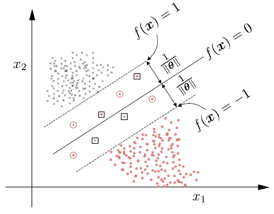
Fig. 6.10 (1) puntos fuera o en los límites del margen y se clasifican correctamente (\(\xi_{n} = 0\)); (2) puntos dentro del margen y clasificados correctamente (\(0 < \xi_{n} < 1\)), denotados por círculos; y (3) puntos mal clasificados, denotados por un cuadrado \((\xi_{n}\geq 1\)).#
Nuestro objetivo es estimar el hiperplano clasificador que maximiza el margen y al mismo tiempo mantiene el número de errores (incluyendo el margen del error) tan pequeño como sea posible.
Solución
Una vez mas la solución está dada por una combinación lineal de un subconjunto de puntos de entrenamiento
\[ \boldsymbol{\hat{\theta}}=\sum_{n=1}^{N_{s}}\lambda_{n}y_{n}\boldsymbol{x}_{n}, \]donde \(\lambda_{n},~n=1,2,\dots,N\), son los multiplicadores de Lagrange asociados con los vectores de soporte. Los puntos \(\boldsymbol{x}_{n}\) pueden satisfacer cualquiera de los tres casos para tipos de datos de entrenamiento.
Tarea de optimización
El Lagrangiano asociado con la tarea de optimización está dado por:
Entonces
El problema dual entonces es proyectado como:
Cuando se trabaja en un espacio RKHS, la función de coste se convierte en
\[ \sum_{n=1}^{N}\lambda_{n}-\frac{1}{2}\sum_{n=1}^{N}\sum_{m=1}^{N}\lambda_{n}\lambda_{m}y_{n}y_{m}\kappa(\boldsymbol{x}_{n}, \boldsymbol{x}_{m}) \]Obsérvese que la única diferencia con respecto a su contraparte linealmente separable es la existencia de \(C\) en las restricciones de desigualdad para \(\lambda_{n}\).
A partir de (6.18) concluimos que para todos los puntos fuera del margen, y en el lado correcto del clasificador, que corresponden a \(\xi_{n} = 0\), tenemos
\[ y_{n}(\boldsymbol{\theta}\boldsymbol{x}_{n}+\theta_{0})>1, \]por lo tanto, \(\lambda_{n}=0\). Esto es, estos puntos no participan en la formación de la solución \(\hat{\boldsymbol{\theta}}\) en (6.18).
Tenemos \(\lambda_{n}\neq0\) sólo para los puntos en los hiperplanos de la frontera, dentro o fuera del margen, pero en el lado equivocado del clasificador. Estos son los vectores de soporte.
Para los puntos que se encuentran dentro del margen o fuera pero en el lado equivocado, \(\xi_{n}>0\); por lo tanto, a partir de (6.18) se tiene que \(\mu_{n} = 0\) y además \(\lambda_{n}=C\).
Los vectores de soporte que se encuentran en los hiperplanos de la frontera del margen satisfacen \(\xi_{n} = 0\) y, por tanto, \(\mu_{n}\) puede ser distinto de cero, lo que lleva a \(0\leq\lambda_{n}\leq C\).
6.18. Ejercicios para el estudiante#
Demuestre que el kernel reproductor \(\kappa(\cdot, \cdot)\) es definido positivo.
Demuestre que si \(\kappa(\cdot, \cdot)\) es el kernel reproductor en un espacio de Hilbert(RKHS) \(\mathbb{H}\), entonces
Demuestre la desigualdad de Cauchy–Schwarz para kernels, es decir,
Demuestre que si
\[ \kappa_i (\cdot, \cdot) : X \times X \to \mathbb{R}, \quad i = 1,2, \]son kernels, entonces:
\(\kappa(x, y) = \kappa_1(x, y) + \kappa_2(x, y)\) también es un kernel;
\(a\kappa(x, y)\), con \(a > 0\), también es un kernel;
\(\kappa(x, y) = \kappa_1(x, y) \kappa_2(x, y)\) también es un kernel.
Demuestre la ecuación (6.4)
Demuestre que la solución para los parámetros \(\hat{\theta}\) en la regresión de ridge con kernel, cuando se incluye un término de sesgo \(b\), está dada por
\[\begin{split} \begin{bmatrix} \theta \\ b \end{bmatrix} = \begin{bmatrix} K + C I & 1 \\ 1^T K & N \end{bmatrix}^{-1} \begin{bmatrix} y \\ y^T 1 \end{bmatrix}, \end{split}\]donde \(1\) es el vector cuyas entradas son todas iguales a uno. Asuma la invertibilidad de la matriz de kernel.
6.19. Aplicación#
Máquinas de vectores de soporte, kernels y entrenamiento sin fuga de información
En esta sección recorremos el camino completo de una SVM con kernel: desde la linealización mediante mapeos de características hasta un protocolo de entrenamiento y evaluación reproducible, con
Pipeline,GridSearchCVy validación cruzada anidada.Los resultados teóricos se verifican numéricamente (equivalencia entre kernel y mapeo explícito, reconstrucción de la función de decisión a partir de los vectores de soporte) y el efecto de las malas prácticas (fuga de información) se cuantifica en lugar de solo enunciarse.
Ruta de la sección
Parte 1. Modelos lineales y características no lineales.
Parte 2. El kernel trick: formulación dual y vectores de soporte.
Parte 3. Efecto de
Cygammasobre la frontera de decisión.Parte 4. Preprocesamiento: por qué la escala importa en una SVM.
Parte 5. Fuga de información (data leakage): demostración cuantitativa.
Parte 6.
Pipeline+GridSearchCV+ validación cruzada anidada.Parte 7. Evaluación final: métricas clásicas, matriz de confusión, curva ROC y resumen de precisión.
Parte 8. Síntesis y Proyecto Integrador.
import warnings
import numpy as np
import pandas as pd
import matplotlib.pyplot as plt
from matplotlib.colors import ListedColormap
from sklearn.exceptions import UndefinedMetricWarning
warnings.simplefilter("ignore", FutureWarning)
warnings.simplefilter("ignore", UndefinedMetricWarning)
RANDOM_STATE = 42
rng = np.random.default_rng(RANDOM_STATE)
CMAP = ListedColormap(["#2b6cb0", "#dd6b20"])
plt.rcParams.update({"figure.dpi": 110, "axes.grid": True, "grid.alpha": 0.25, "axes.spines.top": False, "axes.spines.right": False})
Parte 1. Modelos lineales y características no lineales
Los modelos lineales pueden ser muy limitados en espacios de baja dimensión, porque las rectas y los hiperplanos tienen una flexibilidad reducida. Una forma de aumentar su capacidad es enriquecer la representación, por ejemplo añadiendo interacciones o potencias de las variables de entrada.
Trabajaremos con un conjunto sintético de cuatro nubes de puntos (clases
0, 1, 2, 3). Lo convertimos en un problema binario con la clase residual módulo 2,y = y % 2, de modo que cada clase queda formada por dos nubes separadas.
Note
Evaluaremos cada modelo con validación cruzada estratificada y no con el mismo conjunto en el que se ajustó. Recuerde que, un modelo evaluado sobre sus propios datos de entrenamiento entrega una cifra optimista que no mide generalización.
from sklearn.datasets import make_blobs
from sklearn.svm import LinearSVC
from sklearn.inspection import DecisionBoundaryDisplay
from sklearn.model_selection import StratifiedKFold, cross_val_score
# Genera 4 nubes de puntos bidimensionales con semilla fija
X, y = make_blobs(centers=4, random_state=8)
# Convierte a binario: clases 0 y 2 pasan a 0, clases 1 y 3 pasan a 1
y = y % 2
# Define un esquema de validación cruzada de 5 particiones que conserva la proporción de clases
cv5 = StratifiedKFold(n_splits=5, shuffle=True, random_state=RANDOM_STATE)
# Define una función reutilizable que dibuja la frontera de decisión de un modelo 2D
def plot_boundary(model, X, y, ax, title, xlabel="Feature 0", ylabel="Feature 1", sv=None):
# Colorea las regiones de decisión evaluando el modelo sobre una malla fina de puntos
DecisionBoundaryDisplay.from_estimator(model, X, response_method="predict", cmap=CMAP, alpha=0.2, grid_resolution=300, ax=ax, xlabel=xlabel, ylabel=ylabel)
# Superpone las observaciones coloreadas según su clase
ax.scatter(X[:, 0], X[:, 1], c=y, cmap=CMAP, edgecolor="k", s=35)
# Comprueba si se entregaron vectores de soporte para resaltarlos
if sv is not None:
# Dibuja un aro grande y sin relleno alrededor de cada vector de soporte
ax.scatter(sv[:, 0], sv[:, 1], s=150, facecolors="none", edgecolors="k", linewidths=1.6)
# Escribe el título del panel
ax.set_title(title)
fig, ax = plt.subplots(figsize=(5, 4))
ax.scatter(X[:, 0], X[:, 1], c=y, cmap=CMAP, edgecolor="k", s=40)
ax.set_xlabel("Feature 0")
ax.set_ylabel("Feature 1")
ax.set_title("Synthetic binary dataset")
plt.show()
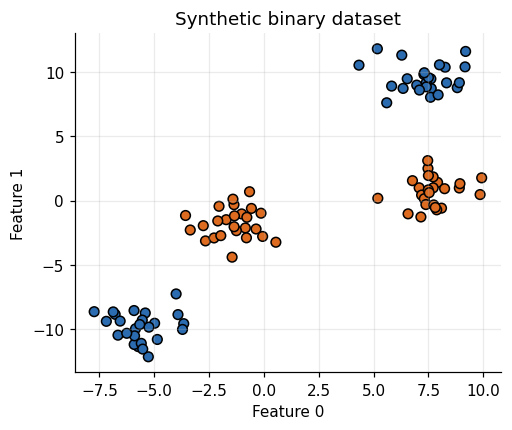
Un modelo lineal de clasificación solo puede separar los puntos mediante una recta. Como cada clase está formada por dos nubes, esperamos un desempeño pobre. Lo cuantificamos con validación cruzada.
# Crea el modelo lineal; dual="auto" elige la formulación más eficiente y max_iter evita falta de convergencia
linear_svm = LinearSVC(dual="auto", max_iter=100000)
# Calcula la exactitud en 5 particiones, cada vez entrenando con 4 y evaluando en la restante
scores_2d = cross_val_score(linear_svm, X, y, cv=cv5, scoring="accuracy")
print(f"CV accuracy, linear SVM in 2D: {scores_2d.mean():.3f} +/- {scores_2d.std(ddof=1):.3f}")
# Ajusta el modelo con todos los datos solo para poder dibujar su frontera
linear_svm.fit(X, y)
fig, ax = plt.subplots(figsize=(5, 4))
plot_boundary(linear_svm, X, y, ax, "Linear SVM in the original 2D space")
plt.show()
CV accuracy, linear SVM in 2D: 0.640 +/- 0.124
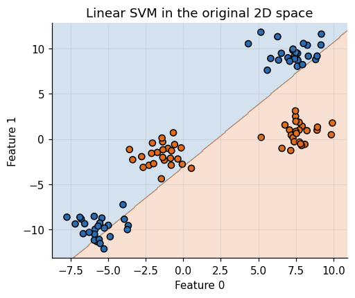
Ahora ampliamos el conjunto de características añadiendo el cuadrado de la segunda variable. Cada punto pasa de \((x_0, x_1)\) a \(\phi(x)=(x_0,\ x_1,\ x_1^{2})\), un punto tridimensional.
Nótese que a
X_newse le agrega una tercera columna construida conX[:, 1:] ** 2.
# Construye la representación aumentada: pega a X una tercera columna con el cuadrado de la segunda variable
X_new = np.hstack([X, X[:, 1:] ** 2])
pd.DataFrame(X_new[:5], columns=["feature0", "feature1", "feature1 ** 2"]).round(3)
| feature0 | feature1 | feature1 ** 2 | |
|---|---|---|---|
| 0 | -1.722 | -1.480 | 2.191 |
| 1 | -3.657 | -9.548 | 91.169 |
| 2 | 7.078 | 0.995 | 0.990 |
| 3 | -1.366 | -0.315 | 0.099 |
| 4 | -2.665 | -3.126 | 9.771 |
fig = plt.figure(figsize=(6, 5))
ax = fig.add_subplot(projection="3d")
# Fija el ángulo de vista: elev es la elevación vertical y azim la rotación horizontal
ax.view_init(elev=-152, azim=-26)
# Crea una máscara booleana que identifica las observaciones de la clase 0
mask = y == 0
# Dibuja en azul los puntos de la clase 0
ax.scatter(X_new[mask, 0], X_new[mask, 1], X_new[mask, 2], c="#2b6cb0", s=50, label="Class 0")
# Dibuja en naranja, con triángulos, los puntos de la clase 1
ax.scatter(X_new[~mask, 0], X_new[~mask, 1], X_new[~mask, 2], c="#dd6b20", marker="^", s=50, label="Class 1")
ax.set_xlabel("feature0")
ax.set_ylabel("feature1")
ax.set_zlabel("feature1 ** 2")
ax.legend()
plt.show()
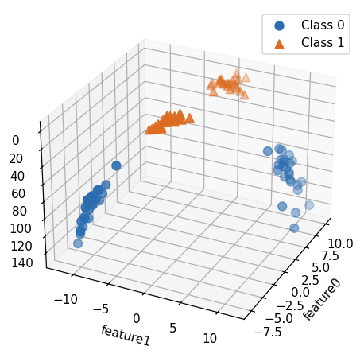
En esta nueva representación sí es posible separar las dos clases con un plano. Lo confirmamos ajustando un modelo lineal a los datos aumentados y comparando su exactitud validada con la del modelo en 2D.
El plano tiene la forma \(c_0 x + c_1 y + c_2 z + \text{intercept}=0\). Nótese que se está realizando un mapeo de características a un espacio de mayor dimensión donde el problema se vuelve linealmente separable.
# Crea el modelo lineal que se entrenará sobre la representación aumentada
linear_svm_3d = LinearSVC(dual="auto", max_iter=100000)
# Calcula la exactitud validada en 5 particiones usando las 3 características
scores_3d = cross_val_score(linear_svm_3d, X_new, y, cv=cv5, scoring="accuracy")
print(f"CV accuracy, linear SVM in 3D (with x1^2): {scores_3d.mean():.3f} +/- {scores_3d.std(ddof=1):.3f}")
# Ajusta el modelo con todos los datos para extraer el plano separador
linear_svm_3d.fit(X_new, y)
# Extrae los coeficientes del plano y el intercepto
coef, intercept = linear_svm_3d.coef_.ravel(), linear_svm_3d.intercept_
print("coef =", np.round(coef, 3), "| intercept =", np.round(intercept, 3))
CV accuracy, linear SVM in 3D (with x1^2): 1.000 +/- 0.000
coef = [ 0.129 -0.218 -0.059] | intercept = [1.17]
Aquí
rstrideycstridecontrolan la densidad de la malla del plano, yelevyazimson ángulos de rotación de la vista. Para más detalle sobreplot_surfacever 3D surface (colormap). Es tarea del estudiante explorar el efecto de cada parámetro.
fig = plt.figure(figsize=(6, 5))
ax = fig.add_subplot(projection="3d")
ax.view_init(elev=-152, azim=-26)
# Crea una malla regular de valores para el eje x, ampliando el rango de los datos en 2 unidades
xx = np.linspace(X_new[:, 0].min() - 2, X_new[:, 0].max() + 2, 50)
# Crea una malla regular de valores para el eje y
yy = np.linspace(X_new[:, 1].min() - 2, X_new[:, 1].max() + 2, 50)
# Combina ambas mallas en una cuadrícula bidimensional
XX, YY = np.meshgrid(xx, yy)
# Despeja z de la ecuación del plano c0*x + c1*y + c2*z + intercepto = 0
ZZ = (coef[0] * XX + coef[1] * YY + intercept) / -coef[2]
ax.plot_surface(XX, YY, ZZ, rstride=8, cstride=8, alpha=0.3)
ax.scatter(X_new[mask, 0], X_new[mask, 1], X_new[mask, 2], c="#2b6cb0", s=50)
ax.scatter(X_new[~mask, 0], X_new[~mask, 1], X_new[~mask, 2], c="#dd6b20", marker="^", s=50)
ax.set_xlabel("feature0")
ax.set_ylabel("feature1")
ax.set_zlabel("feature1 ** 2")
plt.show()
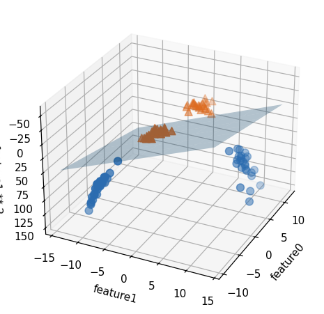
Como función de las características originales, el modelo ya no es lineal: la frontera es una curva cerrada. Para dibujarla evaluamos
decision_functionsobre una malla 2D, completando la tercera coordenada con \(x_1^2\), y trazamos la curva de nivel cero. La funciónravel()aplana un arreglo a 1D ynp.c_apila columnas.
# Calcula el valor de la tercera característica sobre la malla: el cuadrado de la coordenada y
ZZ = YY ** 2
# Evalúa la función de decisión del modelo 3D en cada punto de la malla, apilando (x, y, y^2)
dec = linear_svm_3d.decision_function(np.c_[XX.ravel(), YY.ravel(), ZZ.ravel()])
fig, ax = plt.subplots(figsize=(5.5, 4.5))
# Colorea las dos regiones separadas por la curva de nivel cero (la frontera de decisión)
ax.contourf(XX, YY, dec.reshape(XX.shape), levels=[dec.min(), 0, dec.max()], cmap=CMAP, alpha=0.25)
# Dibuja la frontera como una línea negra
ax.contour(XX, YY, dec.reshape(XX.shape), levels=[0], colors="k", linewidths=1.5)
# Superpone las observaciones originales
ax.scatter(X[:, 0], X[:, 1], c=y, cmap=CMAP, edgecolor="k", s=40)
ax.set_xlabel("Feature 0")
ax.set_ylabel("Feature 1")
ax.set_title("Linear in 3D, non-linear in the original space")
plt.show()
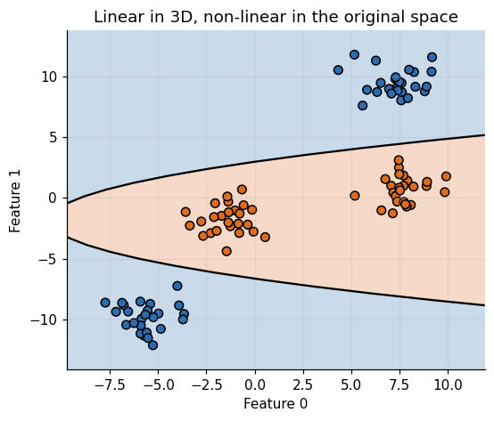
Del mapeo explícito al kernel: una verificación numérica
Construir \(\phi(x)\) de forma explícita se vuelve inviable cuando la dimensión crece. La observación clave es que SVM solo necesita productos internos \(\langle \phi(x),\phi(z)\rangle\), y para ciertos mapeos ese producto puede calcularse sin construir \(\phi\).
Para \(x,z\in\mathbb{R}^2\), el mapeo polinómico de grado 2 $\( \phi(x)=\left(1,\ \sqrt{2}\,x_1,\ \sqrt{2}\,x_2,\ x_1^2,\ \sqrt{2}\,x_1x_2,\ x_2^2\right) \)\( satisface la identidad \)\( \langle \phi(x),\phi(z)\rangle=(\langle x,z\rangle+1)^2=k_{\text{poly}}(x,z). \)$
Verificamos la identidad numéricamente con
polynomial_kerneldescikit-learn: el lado izquierdo construye el espacio de 6 dimensiones, el derecho nunca lo construye.
# Importa la función que calcula el kernel polinómico directamente
from sklearn.metrics.pairwise import polynomial_kernel
# Define el mapeo explícito de grado 2 que lleva cada punto de R^2 a R^6
def phi(points):
# Separa la primera coordenada de todos los puntos
a = points[:, 0]
# Separa la segunda coordenada de todos los puntos
b = points[:, 1]
# Apila las 6 nuevas características como columnas y devuelve la matriz resultante
return np.c_[np.ones(len(points)), np.sqrt(2) * a, np.sqrt(2) * b, a ** 2, np.sqrt(2) * a * b, b ** 2]
# Toma 6 puntos aleatorios del plano para probar la identidad
pts = rng.normal(size=(6, 2))
# Calcula la matriz de productos internos en el espacio de 6 dimensiones (camino explícito)
gram_explicit = phi(pts) @ phi(pts).T
# Calcula la misma matriz con el kernel, sin construir phi (camino implícito)
gram_kernel = polynomial_kernel(pts, pts, degree=2, gamma=1.0, coef0=1.0)
print("Explicit map and kernel coincide:", np.allclose(gram_explicit, gram_kernel))
print("Max absolute difference:", np.abs(gram_explicit - gram_kernel).max())
Explicit map and kernel coincide: True
Max absolute difference: 8.881784197001252e-16
Parte 2. El kernel trick: formulación dual y vectores de soporte
Con margen blando, la SVM resuelve el problema primal
cuyo dual depende de los datos solo a través del kernel \(k(x_i,x_j)=\langle\phi(x_i),\phi(x_j)\rangle\):
La función de decisión resultante es
donde solo los vectores de soporte (los \(\alpha_i>0\)) contribuyen. En scikit-learn, dual_coef_ almacena los productos \(\alpha_i y_i\), y por eso su signo indica la clase de cada vector de soporte.
Para hacer una predicción, se mide la similitud del nuevo punto con cada vector de soporte, ponderada por su importancia aprendida. Con el kernel gaussiano (RBF):
Warning
El kernel gaussiano lleva signo negativo en el exponente. Sin él, \(k\) crecería con la distancia y dejaría de ser una medida de similitud. El parámetro \(\gamma\) fija la escala de “cercanía”: un \(\gamma\) grande vuelve local la influencia de cada vector de soporte.
from sklearn.datasets import make_moons
from sklearn.svm import SVC
from sklearn.metrics.pairwise import rbf_kernel
# Genera 200 puntos en forma de dos lunas con ruido moderado
X_m, y_m = make_moons(n_samples=200, noise=0.25, random_state=RANDOM_STATE)
# Define explícitamente gamma y C para poder reutilizar sus valores numéricos
GAMMA, C_VAL = 0.8, 10.0
# Ajusta la SVM con kernel gaussiano
svm = SVC(kernel="rbf", C=C_VAL, gamma=GAMMA).fit(X_m, y_m)
# Extrae los vectores de soporte (los puntos que definen la frontera)
sv = svm.support_vectors_
fig, ax = plt.subplots(figsize=(5.5, 4.5))
plot_boundary(svm, X_m, y_m, ax, "RBF SVM and its support vectors", sv=sv)
plt.show()
print(f"Support vectors: {len(sv)} of {len(X_m)} observations ({len(sv) / len(X_m):.0%})")
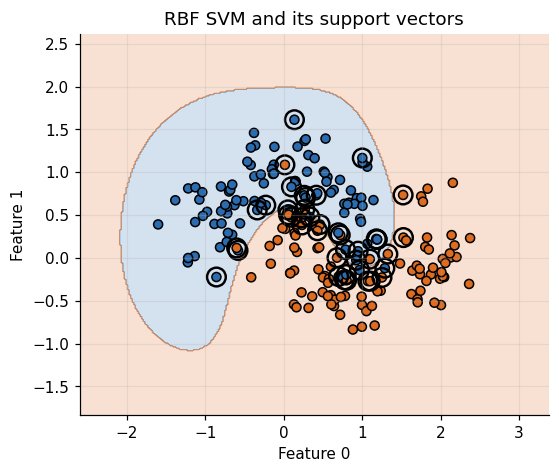
Support vectors: 43 of 200 observations (22%)
Para comprobar que entendemos el modelo, reconstruimos la función de decisión a mano a partir de los tres objetos que guarda
SVC: vectores de soporte,dual_coef_eintercept_. Si la teoría es correcta, el resultado debe coincidir condecision_function.Verificamos además la restricción de caja \(|\alpha_i y_i|\le C\) del problema dual.
# Crea 50 puntos nuevos en la región de los datos para probar la reconstrucción
X_probe = rng.uniform(-2, 3, size=(50, 2))
# Calcula la similitud gaussiana entre cada punto nuevo y cada vector de soporte
K = rbf_kernel(X_probe, svm.support_vectors_, gamma=GAMMA)
# Combina similitudes con los coeficientes duales y suma el intercepto: f(x) = sum(alpha_i y_i k(x_i, x)) + b
f_manual = K @ svm.dual_coef_.ravel() + svm.intercept_[0]
# Obtiene la misma función de decisión directamente de scikit-learn
f_sklearn = svm.decision_function(X_probe)
print("Manual decision function equals sklearn:", np.allclose(f_manual, f_sklearn))
print(f"max |alpha_i y_i| = {np.abs(svm.dual_coef_).max():.4f} <= C = {C_VAL}")
# Vectores de soporte que alcanzan la cota C (dentro del margen o mal clasificados)
print("Support vectors at the bound C:", int(np.isclose(np.abs(svm.dual_coef_), C_VAL).sum()))
Manual decision function equals sklearn: True
max |alpha_i y_i| = 10.0000 <= C = 10.0
Support vectors at the bound C: 32
Parte 3. Efecto de C y gamma sobre la frontera de decisión
gammacontrola la anchura del kernel gaussiano: determina la escala de lo que significa estar “cerca”. Ungammapequeño da un radio grande (muchos puntos se consideran cercanos) y fronteras suaves; ungammagrande produce fronteras centradas en puntos individuales y un modelo más complejo.Ces el parámetro de regularización: limita la influencia de cada punto (más precisamente, sudual_coef_). UnCpequeño corresponde a un modelo muy restringido; unCgrande permite que los puntos mal clasificados doblen la frontera.Cada panel reporta la exactitud en entrenamiento y en un conjunto de validación apartado, para ver el sobreajuste como una brecha entre ambas cifras.
Important
Esta cuadrícula es descriptiva. Las cifras de validación de esta parte no se usan para elegir hiperparámetros: esa selección se hace más adelante con validación cruzada dentro del conjunto de entrenamiento.
from sklearn.model_selection import train_test_split
# Problema de dos lunas más ruidoso, donde el sobreajuste es visible
X_g, y_g = make_moons(n_samples=300, noise=0.35, random_state=RANDOM_STATE)
# 70% para entrenar y 30% para validar, conservando la proporción de clases
Xg_tr, Xg_va, yg_tr, yg_va = train_test_split(X_g, y_g, test_size=0.3, stratify=y_g, random_state=RANDOM_STATE)
fig, axes = plt.subplots(3, 3, figsize=(13, 11))
# Filas: C de más restringido a más flexible
for row, C in zip(axes, [0.1, 1, 1000]):
# Columnas: gamma de kernel ancho a kernel angosto
for ax, gamma in zip(row, [0.1, 1, 10]):
# Se ajusta solo con entrenamiento y se compara la exactitud en train vs. validación
model = SVC(kernel="rbf", C=C, gamma=gamma).fit(Xg_tr, yg_tr)
acc_tr = model.score(Xg_tr, yg_tr)
acc_va = model.score(Xg_va, yg_va)
plot_boundary(model, Xg_tr, yg_tr, ax, f"C={C:g}, gamma={gamma:g}\ntrain={acc_tr:.2f} | validation={acc_va:.2f}", sv=model.support_vectors_)
plt.tight_layout()
plt.show()
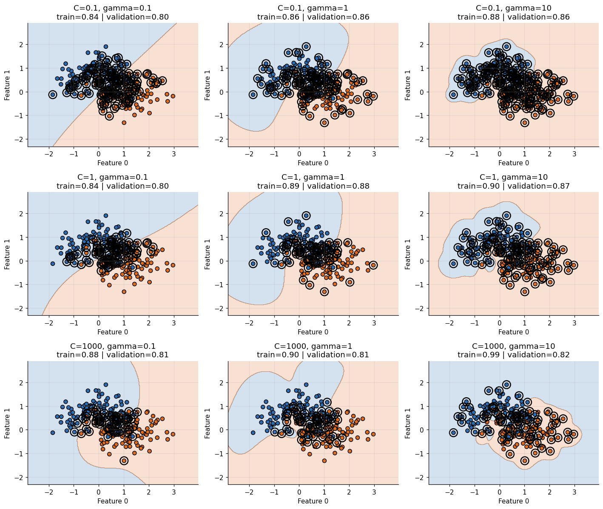
De izquierda a derecha (
gammade 0.1 a 10) la frontera pasa de suave a muy local. De arriba hacia abajo (Cde 0.1 a 1000) el modelo pasa de casi lineal a ajustar el ruido. La esquina inferior derecha combina ambas fuentes de complejidad y exhibe la mayor brecha entre entrenamiento y validación.Como ambos parámetros aumentan la complejidad, sus mejores valores están correlacionados y deben ajustarse conjuntamente. Esto justifica una búsqueda en cuadrícula bidimensional y no dos búsquedas independientes.
Parte 4. Preprocesamiento: por qué la escala importa en una SVM
Usaremos el conjunto Breast Cancer Wisconsin (569 observaciones, 30 variables). Para que las métricas tengan una lectura clínica directa, la clase positiva es
malignant(etiqueta 1). Así, el recall mide la proporción de tumores malignos detectados (sensibilidad) y una falsa negativa es el error más costoso.Desde el primer momento se aparta un conjunto de prueba (25%, estratificado) que no se toca hasta la evaluación final. Todo análisis exploratorio, escalado y ajuste de hiperparámetros usa únicamente el conjunto de entrenamiento.
from sklearn.datasets import load_breast_cancer
# as_frame=True conserva los nombres de las variables
cancer = load_breast_cancer(as_frame=True)
X = cancer.data
# Recodifica la variable objetivo: 1 = malignant (clase positiva), 0 = benign
y = (cancer.target == 0).astype(int).rename("malignant")
# Etiquetas en inglés para tablas y figuras (posición 0 = benign, 1 = malignant)
LABELS = ["Benign", "Malignant"]
# 75% para entrenamiento y 25% para prueba, conservando la proporción de clases
X_train, X_test, y_train, y_test = train_test_split(X, y, test_size=0.25, stratify=y, random_state=RANDOM_STATE)
# Tamaño y prevalencia de la clase positiva en cada partición
pd.DataFrame({"n": [len(y_train), len(y_test)], "malignant share": [y_train.mean(), y_test.mean()]}, index=["train", "test"]).round(3)
| n | malignant share | |
|---|---|---|
| train | 426 | 0.373 |
| test | 143 | 0.371 |
Las SVM son muy sensibles a la escala de los datos: el kernel depende de distancias, y una variable con rango de miles domina a otra con rango de décimas. Veamos los valores mínimos y máximos de cada característica en escala logarítmica.
fig, ax = plt.subplots(figsize=(8, 4))
# Mínimo y máximo de cada característica (el mínimo se recorta en 1e-3 porque la escala logarítmica no admite ceros)
ax.plot(X_train.min(axis=0).clip(lower=1e-3).to_numpy(), "o", label="min")
ax.plot(X_train.max(axis=0).to_numpy(), "^", label="max")
# Escala logarítmica para ver los distintos órdenes de magnitud
ax.set_yscale("log")
ax.set_xlabel("Feature index")
ax.set_ylabel("Feature magnitude (log scale)")
ax.set_title("Feature ranges in the training set")
ax.legend(loc=4)
plt.show()
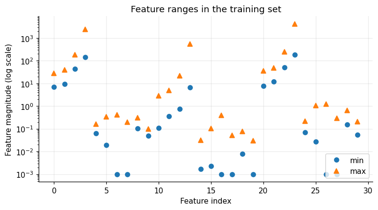
Las características difieren en varios órdenes de magnitud. Cuantificamos el efecto con validación cruzada sobre el conjunto de entrenamiento: la misma SVM con y sin escalado, dentro de un
Pipelinepara que el escalador se ajuste solo con los datos de entrenamiento de cada partición.
from sklearn.pipeline import Pipeline
from sklearn.preprocessing import StandardScaler, MinMaxScaler
# Validación cruzada de 5 particiones estratificadas, compartida por los tres modelos
cv_fold = StratifiedKFold(n_splits=5, shuffle=True, random_state=RANDOM_STATE)
# SVM sin escalar
svm_raw = SVC()
# SVM con estandarización (media 0 y desviación 1 por variable)
svm_std = Pipeline([("scaler", StandardScaler()), ("svc", SVC())])
# SVM con escalado al intervalo [0, 1]
svm_mm = Pipeline([("scaler", MinMaxScaler()), ("svc", SVC())])
rows = []
for name, model in [("SVC without scaling", svm_raw), ("StandardScaler + SVC", svm_std), ("MinMaxScaler + SVC", svm_mm)]:
# Mismo esquema de partición para todos, de modo que la comparación sea justa
s = cross_val_score(model, X_train, y_train, cv=cv_fold, scoring="accuracy")
rows.append({"model": name, "CV accuracy (mean)": s.mean(), "CV accuracy (std)": s.std(ddof=1)})
pd.DataFrame(rows).round(3)
| model | CV accuracy (mean) | CV accuracy (std) | |
|---|---|---|---|
| 0 | SVC without scaling | 0.913 | 0.016 |
| 1 | StandardScaler + SVC | 0.967 | 0.015 |
| 2 | MinMaxScaler + SVC | 0.962 | 0.010 |
Escalar los datos produce una mejora sustancial. Para entender el mecanismo, implementamos el
MinMaxScalerde forma manual:
con el mínimo y el rango calculados solo en el conjunto de entrenamiento y reutilizados tal cual en el de prueba.
# Mínimo y rango de cada columna, calculados solo con el entrenamiento
min_on_training = X_train.min(axis=0)
range_on_training = X_train.max(axis=0) - min_on_training
X_train_scaled = (X_train - min_on_training) / range_on_training
# La prueba se escala con los parámetros del entrenamiento (nunca con los suyos propios)
X_test_scaled = (X_test - min_on_training) / range_on_training
# El entrenamiento escalado debe quedar exactamente en [0, 1]
print(f"Scaled train range: [{X_train_scaled.min().min():.3f}, {X_train_scaled.max().max():.3f}]")
# La prueba puede salirse de [0, 1], y es lo esperado
print(f"Scaled test range: [{X_test_scaled.min().min():.3f}, {X_test_scaled.max().max():.3f}]")
# Verifica que la implementación manual coincide con MinMaxScaler de scikit-learn
mm = MinMaxScaler().fit(X_train)
print("Manual equals MinMaxScaler (train):", np.allclose(X_train_scaled, mm.transform(X_train)))
print("Manual equals MinMaxScaler (test): ", np.allclose(X_test_scaled, mm.transform(X_test)))
Scaled train range: [0.000, 1.000]
Scaled test range: [-0.098, 1.278]
Manual equals MinMaxScaler (train): True
Manual equals MinMaxScaler (test): True
Que la prueba escalada se salga de \([0,1]\) no es un error: es la señal de que los parámetros de escala no vieron los datos de prueba. Si recalculáramos mínimo y máximo con la prueba (o con todos los datos), estaríamos filtrando información del futuro.
Parte 5. Fuga de información (data leakage): demostración cuantitativa
Hay fuga de información cuando un paso que aprende de los datos (escalado, imputación, selección de variables, reducción de dimensión) usa observaciones que luego sirven para validar o probar. El resultado es una estimación optimista del desempeño, que no se sostiene con datos nuevos.
Caso 1: escalado previo a la validación cruzada. Es el error más frecuente. Comparamos el procedimiento incorrecto (escalar todo antes de dividir) con el correcto (
Pipeline). En este conjunto el efecto es pequeño, pero el procedimiento sigue siendo incorrecto por construcción.
from sklearn.model_selection import RepeatedStratifiedKFold
# 5 particiones repetidas 3 veces con barajado distinto, para reducir la varianza de la comparación
cv_rep = RepeatedStratifiedKFold(n_splits=5, n_repeats=3, random_state=RANDOM_STATE)
# PROCEDIMIENTO INCORRECTO: el escalador aprende media y desviación con TODO el entrenamiento, antes de partir
X_leaky = StandardScaler().fit_transform(X_train)
leaky = cross_val_score(SVC(), X_leaky, y_train, cv=cv_rep, scoring="accuracy")
# PROCEDIMIENTO CORRECTO: el escalador se reajusta dentro de cada partición usando solo su parte de entrenamiento
clean = cross_val_score(svm_std, X_train, y_train, cv=cv_rep, scoring="accuracy")
print(f"Leaky (scale first, then CV): {leaky.mean():.4f} +/- {leaky.std(ddof=1):.4f}")
print(f"Clean (Pipeline inside CV): {clean.mean():.4f} +/- {clean.std(ddof=1):.4f}")
# La diferencia mide el sesgo optimista introducido por la fuga
print(f"Optimistic bias from leakage: {leaky.mean() - clean.mean():+.4f}")
Leaky (scale first, then CV): 0.9750 +/- 0.0164
Clean (Pipeline inside CV): 0.9703 +/- 0.0186
Optimistic bias from leakage: +0.0047
Caso 2: selección supervisada de variables sobre datos sin señal. Es la demostración más contundente. Generamos 80 observaciones con 3000 variables de ruido puro y etiquetas aleatorias: por construcción, ningún modelo puede superar 50% de exactitud. Si seleccionamos las 20 variables “más asociadas” con la etiqueta usando todos los datos y luego validamos, la validación cruzada entregará una cifra engañosamente alta.
from sklearn.feature_selection import SelectKBest, f_classif
# 80 observaciones con 3000 variables de ruido puro y etiquetas aleatorias, independientes de las variables
X_noise = rng.normal(size=(80, 3000))
y_noise = rng.integers(0, 2, size=80)
# PROCEDIMIENTO INCORRECTO: selecciona las 20 "mejores" variables mirando TODAS las etiquetas
X_sel = SelectKBest(f_classif, k=20).fit_transform(X_noise, y_noise)
leaky_sel = cross_val_score(SVC(), X_sel, y_noise, cv=cv_rep, scoring="accuracy")
# PROCEDIMIENTO CORRECTO: la selección ocurre dentro de cada partición, solo con sus datos de entrenamiento
pipe_sel = Pipeline([("select", SelectKBest(f_classif, k=20)), ("svc", SVC())])
clean_sel = cross_val_score(pipe_sel, X_noise, y_noise, cv=cv_rep, scoring="accuracy")
fig, ax = plt.subplots(figsize=(6, 4))
ax.bar(["Leaky\n(select, then CV)", "Clean\n(Pipeline)"], [leaky_sel.mean(), clean_sel.mean()], yerr=[leaky_sel.std(ddof=1), clean_sel.std(ddof=1)], color=["#dd6b20", "#2b6cb0"], capsize=6)
# Desempeño esperado al azar: como las etiquetas son aleatorias, ninguna exactitud real puede superarlo
ax.axhline(0.5, color="k", ls="--", label="Chance level (labels are random)")
ax.set_ylim(0, 1)
ax.set_ylabel("CV accuracy")
ax.set_title("Leakage on pure noise")
ax.legend(loc="upper right")
plt.show()
print(f"Leaky: {leaky_sel.mean():.3f} | Clean: {clean_sel.mean():.3f} | True accuracy achievable: 0.500")
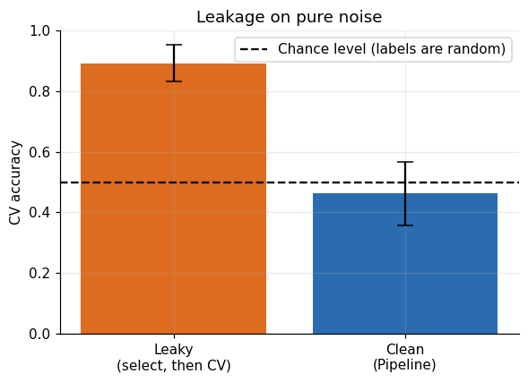
Leaky: 0.892 | Clean: 0.463 | True accuracy achievable: 0.500
La versión con fuga reporta una exactitud muy superior al azar sobre datos que no contienen ninguna señal. Ningún modelo aprendió nada: la selección memorizó las etiquetas de las particiones de validación antes de que la validación ocurriera.
Warning
Reglas para evitar fuga de información
Dividir primero. El conjunto de prueba se aparta antes de cualquier análisis y se usa una sola vez.
Todo lo que aprende de los datos va dentro del
Pipeline: escalado, imputación, codificación, selección de variables, PCA, balanceo.Nunca elegir modelo o umbral con el conjunto de prueba. La selección se hace con validación cruzada dentro del entrenamiento.
Respetar la estructura de los datos. Si hay grupos (pacientes, sitios) o tiempo, usar
GroupKFoldoTimeSeriesSplit.Anidar cuando se selecciona y se estima a la vez. La puntuación de
GridSearchCVes optimista porque fue la que se maximizó: se corrige con validación cruzada anidada.
Parte 6. Pipeline + GridSearchCV + validación cruzada anidada
Definimos el espacio de búsqueda como una lista de cuadrículas, una por familia de kernel, porque
gammano existe en el kernel lineal ydegreesolo existe en el polinómico. Además, el escalador es un hiperparámetro más: la búsqueda elige entreStandardScaleryMinMaxScaler.Las escalas de
Cygammason logarítmicas, porque su efecto es multiplicativo. Usamosroc_auccomo criterio de refinamiento (refit) por ser independiente del umbral y robusto a desbalance, y registramos además precisión, recall, F1 y exactitud para ver el compromiso entre métricas.Con
return_train_score=Trueguardamos el desempeño en entrenamiento de cada candidato, de modo que la brecha entrenamiento menos validación sea una medida directa de sobreajuste.
from sklearn.model_selection import GridSearchCV, ParameterGrid
from sklearn.base import clone
from sklearn.model_selection import validation_curve, learning_curve, cross_validate
# Pipeline base: primero escala, después clasifica (los nombres de los pasos se usan para nombrar parámetros)
pipe = Pipeline([("scaler", StandardScaler()), ("svc", SVC(cache_size=500))])
# Lista de cuadrículas: cada diccionario es una familia de kernel con sus propios parámetros
param_grid = [
# Kernel gaussiano, con C y gamma en escala logarítmica
{"scaler": [StandardScaler(), MinMaxScaler()], "svc__kernel": ["rbf"], "svc__C": np.logspace(-2, 3, 6), "svc__gamma": np.logspace(-4, 1, 6)},
# Kernel lineal, que solo tiene el parámetro C
{"scaler": [StandardScaler(), MinMaxScaler()], "svc__kernel": ["linear"], "svc__C": np.logspace(-3, 2, 6)},
# Kernel polinómico, con C y grado (gamma="scale" usa el valor por defecto de la librería)
{"scaler": [StandardScaler(), MinMaxScaler()], "svc__kernel": ["poly"], "svc__C": np.logspace(-2, 2, 5), "svc__degree": [2, 3], "svc__gamma": ["scale"]},
]
# Validación cruzada interna: 5 particiones repetidas 2 veces (10 evaluaciones por candidato)
inner_cv = RepeatedStratifiedKFold(n_splits=5, n_repeats=2, random_state=RANDOM_STATE)
scoring = ["roc_auc", "f1", "recall", "precision", "accuracy"]
n_candidates = len(ParameterGrid(param_grid))
print(f"Candidates: {n_candidates} | model fits: {n_candidates * inner_cv.get_n_splits()}")
# refit="roc_auc" reajusta el mejor modelo con todo el entrenamiento
gs = GridSearchCV(pipe, param_grid, cv=inner_cv, scoring=scoring, refit="roc_auc", return_train_score=True, n_jobs=1)
# La búsqueda usa EXCLUSIVAMENTE el conjunto de entrenamiento
gs.fit(X_train, y_train)
print("Best parameters:", {k: (type(v).__name__ if k == "scaler" else (float(v) if isinstance(v, (int, float, np.number)) else v)) for k, v in gs.best_params_.items()})
# Estimación optimista, porque es la puntuación que se maximizó
print(f"Best mean CV ROC AUC: {gs.best_score_:.4f}")
Candidates: 104 | model fits: 1040
Best parameters: {'scaler': 'MinMaxScaler', 'svc__C': 100.0, 'svc__gamma': 0.1, 'svc__kernel': 'rbf'}
Best mean CV ROC AUC: 0.9961
Inspeccionamos los diez mejores candidatos. Conviene mirar más allá del primero: si muchos candidatos quedan dentro de una desviación estándar del mejor, la elección es estadísticamente indistinguible y suele preferirse el modelo más simple (regla de una desviación estándar).
res = pd.DataFrame(gs.cv_results_)
# Nombres legibles en lugar de objetos o columnas con prefijo "param_"
res["scaler"] = res["param_scaler"].map(lambda s: type(s).__name__)
res["kernel"] = res["param_svc__kernel"]
res["C"] = res["param_svc__C"].astype(float)
# gamma puede ser un número, la palabra "scale" o vacío
res["gamma"] = res["param_svc__gamma"]
# El grado solo existe en el kernel polinómico
res["degree"] = res["param_svc__degree"]
# Brecha entrenamiento menos validación: medida directa de sobreajuste
res["train-val gap"] = res["mean_train_roc_auc"] - res["mean_test_roc_auc"]
cols = ["kernel", "scaler", "C", "gamma", "degree", "mean_test_roc_auc", "std_test_roc_auc", "mean_train_roc_auc", "train-val gap"]
# Los 10 mejores candidatos según el ranking de ROC AUC
res.sort_values("rank_test_roc_auc").head(10)[cols].round(4).reset_index(drop=True)
| kernel | scaler | C | gamma | degree | mean_test_roc_auc | std_test_roc_auc | mean_train_roc_auc | train-val gap | |
|---|---|---|---|---|---|---|---|---|---|
| 0 | rbf | MinMaxScaler | 100.0 | 0.1 | NaN | 0.9961 | 0.0045 | 0.9976 | 0.0015 |
| 1 | rbf | StandardScaler | 10.0 | 0.01 | NaN | 0.9960 | 0.0048 | 0.9977 | 0.0016 |
| 2 | rbf | MinMaxScaler | 10.0 | 1.0 | NaN | 0.9956 | 0.0045 | 0.9998 | 0.0042 |
| 3 | rbf | StandardScaler | 100.0 | 0.001 | NaN | 0.9956 | 0.0050 | 0.9968 | 0.0012 |
| 4 | rbf | StandardScaler | 1000.0 | 0.0001 | NaN | 0.9951 | 0.0049 | 0.9966 | 0.0015 |
| 5 | rbf | StandardScaler | 100.0 | 0.01 | NaN | 0.9950 | 0.0043 | 1.0000 | 0.0050 |
| 6 | poly | MinMaxScaler | 10.0 | scale | 2.0 | 0.9950 | 0.0060 | 0.9985 | 0.0035 |
| 7 | rbf | MinMaxScaler | 1000.0 | 0.01 | NaN | 0.9949 | 0.0049 | 0.9968 | 0.0019 |
| 8 | linear | StandardScaler | 0.1 | NaN | NaN | 0.9946 | 0.0054 | 0.9962 | 0.0016 |
| 9 | linear | MinMaxScaler | 10.0 | NaN | NaN | 0.9944 | 0.0045 | 0.9965 | 0.0020 |
El mapa de calor de la familia gaussiana muestra la interacción entre
Cygamma: la región de buen desempeño es una franja diagonal, no un punto. Por eso un ajuste independiente de cada parámetro sería subóptimo.
# Candidatos de kernel gaussiano con estandarización
sub = res[(res["kernel"] == "rbf") & (res["scaler"] == "StandardScaler")].copy()
# gamma a número para poder ordenar y pivotar
sub["gamma"] = sub["gamma"].astype(float)
# Matriz: filas = C, columnas = gamma, valores = ROC AUC medio validado
heat = sub.pivot(index="C", columns="gamma", values="mean_test_roc_auc").sort_index()
fig, ax = plt.subplots(figsize=(7, 5))
# vmin=0.95 recorta la escala de color para que se distingan las diferencias finas
im = ax.imshow(heat.values, origin="lower", cmap="viridis", aspect="auto", vmin=0.95, vmax=heat.values.max())
ax.set_xticks(range(heat.shape[1]), [f"{g:.0e}" for g in heat.columns])
ax.set_yticks(range(heat.shape[0]), [f"{c:.0e}" for c in heat.index])
# Valor de ROC AUC escrito en cada celda
for i in range(heat.shape[0]):
for j in range(heat.shape[1]):
ax.text(j, i, f"{heat.values[i, j]:.3f}", ha="center", va="center", color="w", fontsize=8)
ax.grid(False)
ax.set_xlabel("gamma")
ax.set_ylabel("C")
ax.set_title("Mean CV ROC AUC (RBF kernel, StandardScaler)")
fig.colorbar(im, ax=ax, label="ROC AUC (color scale clipped below 0.95)")
plt.show()
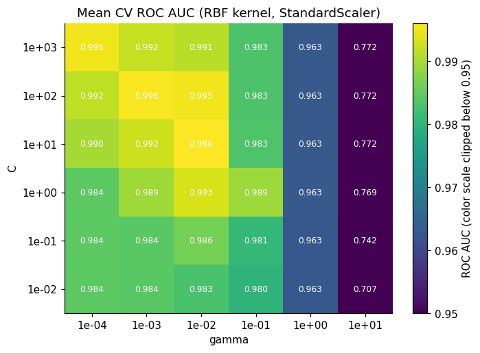
Diagnóstico de sobreajuste. Dos curvas complementarias, calculadas solo con el entrenamiento:
Curva de validación en
C: si el desempeño de entrenamiento sube mientras el de validación se estanca o cae, el modelo memoriza.Curva de aprendizaje: si ambas curvas convergen, más datos no ayudarán (sesgo); si persiste una brecha, más datos sí ayudarían (varianza).
# C en escala logarítmica
C_range = np.logspace(-2, 3, 11)
# F1 de entrenamiento y validación para cada C, con el resto de hiperparámetros del mejor modelo
tr_v, va_v = validation_curve(clone(gs.best_estimator_), X_train, y_train, param_name="svc__C", param_range=C_range, cv=cv_fold, scoring="f1", n_jobs=1)
# F1 para tamaños crecientes del conjunto de entrenamiento (de 10% a 100%)
sizes, tr_l, va_l = learning_curve(clone(gs.best_estimator_), X_train, y_train, train_sizes=np.linspace(0.1, 1.0, 8), cv=cv_fold, scoring="f1", shuffle=True, random_state=RANDOM_STATE, n_jobs=1)
fig, axes = plt.subplots(1, 2, figsize=(12, 4.2))
# Curva de validación: media y banda de ±1 desviación estándar
for arr, lab, col in [(tr_v, "Training", "#dd6b20"), (va_v, "Validation (CV)", "#2b6cb0")]:
axes[0].semilogx(C_range, arr.mean(axis=1), "o-", color=col, label=lab)
axes[0].fill_between(C_range, arr.mean(axis=1) - arr.std(axis=1), arr.mean(axis=1) + arr.std(axis=1), color=col, alpha=0.15)
axes[0].set_xlabel("C")
axes[0].set_ylabel("F1 score")
axes[0].set_title("Validation curve")
axes[0].legend()
# Curva de aprendizaje: misma construcción, con el tamaño del entrenamiento en el eje horizontal
for arr, lab, col in [(tr_l, "Training", "#dd6b20"), (va_l, "Validation (CV)", "#2b6cb0")]:
axes[1].plot(sizes, arr.mean(axis=1), "o-", color=col, label=lab)
axes[1].fill_between(sizes, arr.mean(axis=1) - arr.std(axis=1), arr.mean(axis=1) + arr.std(axis=1), color=col, alpha=0.15)
axes[1].set_xlabel("Training set size")
axes[1].set_ylabel("F1 score")
axes[1].set_title("Learning curve")
axes[1].legend()
plt.tight_layout()
plt.show()
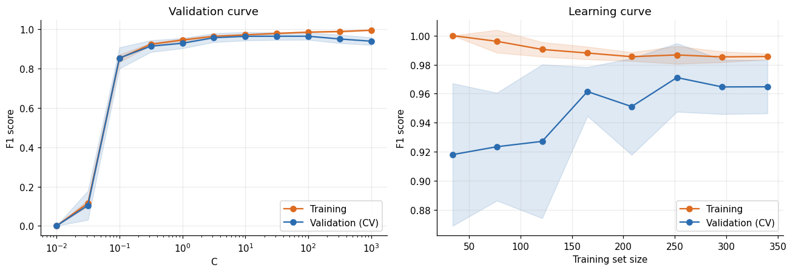
Validación cruzada anidada y modelos de referencia
La puntuación
best_score_deGridSearchCVes optimista: se obtuvo eligiendo el máximo sobre muchos candidatos con los mismos datos. Para estimar el desempeño de todo el procedimiento (incluida la búsqueda de hiperparámetros) usamos validación cruzada anidada:Lazo interno:
GridSearchCVelige hiperparámetros dentro de cada partición de entrenamiento externa.Lazo externo: evalúa el modelo elegido en una partición que la búsqueda nunca vio.
Comparamos contra dos referencias con el mismo esquema: un clasificador que predice la prevalencia (
DummyClassifier) y una regresión logística también ajustada con búsqueda interna. Un modelo complejo solo se justifica si supera de forma clara a una referencia simple.
from sklearn.dummy import DummyClassifier
from sklearn.linear_model import LogisticRegression
# Validación cruzada externa (otra semilla que la interna, para que sean independientes)
outer_cv = StratifiedKFold(n_splits=5, shuffle=True, random_state=RANDOM_STATE + 1)
# Búsqueda de la SVM que se ejecuta dentro de cada partición externa (solo optimiza ROC AUC)
svm_search = GridSearchCV(pipe, param_grid, cv=inner_cv, scoring="roc_auc", n_jobs=1)
# Regresión logística con escalado, con búsqueda interna sobre la regularización C
lr_pipe = Pipeline([("scaler", StandardScaler()), ("clf", LogisticRegression(max_iter=5000))])
lr_search = GridSearchCV(lr_pipe, {"clf__C": np.logspace(-3, 3, 7)}, cv=inner_cv, scoring="roc_auc", n_jobs=1)
# Modelo de referencia que siempre predice la clase más frecuente
dummy = DummyClassifier(strategy="prior")
nested = {}
for name, est in [("Dummy (prevalence)", dummy), ("Logistic regression (tuned)", lr_search), ("SVM (tuned, nested)", svm_search)]:
# Validación cruzada externa; la búsqueda interna ocurre dentro de cada partición
nested[name] = cross_validate(est, X_train, y_train, cv=outer_cv, scoring=scoring, n_jobs=1)
summary_rows = []
for name, out in nested.items():
row = {"model": name}
for m in scoring:
# Media y desviación estándar entre las 5 particiones externas
row[m] = f"{out[f'test_{m}'].mean():.3f} +/- {out[f'test_{m}'].std(ddof=1):.3f}"
summary_rows.append(row)
pd.DataFrame(summary_rows).set_index("model")
| roc_auc | f1 | recall | precision | accuracy | |
|---|---|---|---|---|---|
| model | |||||
| Dummy (prevalence) | 0.500 +/- 0.000 | 0.000 +/- 0.000 | 0.000 +/- 0.000 | 0.000 +/- 0.000 | 0.627 +/- 0.005 |
| Logistic regression (tuned) | 0.995 +/- 0.006 | 0.958 +/- 0.014 | 0.931 +/- 0.015 | 0.988 +/- 0.028 | 0.969 +/- 0.011 |
| SVM (tuned, nested) | 0.993 +/- 0.008 | 0.967 +/- 0.020 | 0.943 +/- 0.035 | 0.994 +/- 0.014 | 0.976 +/- 0.014 |
La diferencia entre
best_score_(lazo simple) y la media anidada es una estimación del optimismo de la selección. Las diferencias entre la SVM y la regresión logística que queden dentro de una desviación estándar entre particiones no son concluyentes; en el Proyecto Integrador se formaliza con una prueba estadística pareada.
Parte 7. Evaluación final: métricas clásicas en el conjunto de prueba
Con hiperparámetros ya elegidos y el modelo final ajustado solo con el entrenamiento (
gs.best_estimator_), se evalúa una única vez en el conjunto de prueba. Sea \(TP, FP, TN, FN\) la matriz de confusión conmalignantcomo clase positiva:
Métrica |
Definición |
Interpretación en este problema |
|---|---|---|
Accuracy |
\(\dfrac{TP+TN}{TP+TN+FP+FN}\) |
Proporción total de aciertos |
Precision |
\(\dfrac{TP}{TP+FP}\) |
De los casos marcados malignos, cuántos lo son |
Recall (sensibilidad) |
\(\dfrac{TP}{TP+FN}\) |
De los tumores malignos, cuántos se detectan |
F1 |
\(\dfrac{2\,\text{Precision}\cdot\text{Recall}}{\text{Precision}+\text{Recall}}\) |
Media armónica de precision y recall |
AUC |
\(P\left(s(x^{+})>s(x^{-})\right)\) |
Probabilidad de ordenar bien un par positivo y negativo |
Las cifras puntuales de un conjunto de prueba de tamaño moderado tienen incertidumbre. Por eso acompañamos cada métrica con un intervalo de confianza del 95% por bootstrap (1000 remuestreos del conjunto de prueba).
from sklearn.metrics import accuracy_score, precision_score, recall_score, f1_score, roc_auc_score, average_precision_score
from sklearn.metrics import confusion_matrix, classification_report, ConfusionMatrixDisplay, RocCurveDisplay, PrecisionRecallDisplay, precision_recall_curve
# Mejor modelo, ya reajustado con todo el conjunto de entrenamiento
best_model = gs.best_estimator_
# Predicción de clase (umbral por defecto: 0 en la función de decisión)
y_pred = best_model.predict(X_test)
# Puntuación continua de la función de decisión, necesaria para ROC y AUC
scores_test = best_model.decision_function(X_test)
y_true = y_test.to_numpy()
def metric_dict(yt, yp, sc):
# Métricas basadas en la clase predicha (accuracy, precision, recall, F1) y en la puntuación continua (ROC AUC, precisión promedio)
return {"Accuracy": accuracy_score(yt, yp), "Precision": precision_score(yt, yp, zero_division=0), "Recall": recall_score(yt, yp), "F1": f1_score(yt, yp), "ROC AUC": roc_auc_score(yt, sc), "Average precision": average_precision_score(yt, sc)}
point = metric_dict(y_true, y_pred, scores_test)
# Bootstrap del conjunto de prueba para estimar intervalos de confianza
rng_b = np.random.default_rng(RANDOM_STATE)
boot = []
for _ in range(1000):
# Remuestreo con reemplazo, del mismo tamaño que el conjunto de prueba
idx = rng_b.integers(0, len(y_true), len(y_true))
# Se descartan remuestreos con una sola clase, donde el AUC no está definida
if y_true[idx].min() == y_true[idx].max():
continue
boot.append(metric_dict(y_true[idx], y_pred[idx], scores_test[idx]))
boot = pd.DataFrame(boot)
# Estimación puntual e intervalo del 95% (percentiles 2.5% y 97.5% del bootstrap)
report = pd.DataFrame({"Point estimate": pd.Series(point), "CI 2.5%": boot.quantile(0.025), "CI 97.5%": boot.quantile(0.975)})
report.round(3)
| Point estimate | CI 2.5% | CI 97.5% | |
|---|---|---|---|
| Accuracy | 0.965 | 0.937 | 0.993 |
| Precision | 1.000 | 1.000 | 1.000 |
| Recall | 0.906 | 0.825 | 0.977 |
| F1 | 0.950 | 0.904 | 0.988 |
| ROC AUC | 0.994 | 0.985 | 1.000 |
| Average precision | 0.992 | 0.980 | 1.000 |
El resumen de precisión (
classification_report) entrega precision, recall y F1 por clase, junto con el soporte (número de casos reales de cada clase) y los promedios macro (sin ponderar) y ponderado.
# Imprime el resumen de clasificación con cuatro decimales y nombres de clases
print(classification_report(y_test, y_pred, target_names=LABELS, digits=4))
precision recall f1-score support
Benign 0.9474 1.0000 0.9730 90
Malignant 1.0000 0.9057 0.9505 53
accuracy 0.9650 143
macro avg 0.9737 0.9528 0.9617 143
weighted avg 0.9669 0.9650 0.9646 143
La matriz de confusión desglosa los errores por tipo. La versión normalizada por filas equivale, en la fila
Malignant, al recall, y en la filaBenign, a la especificidad.
fig, axes = plt.subplots(1, 2, figsize=(10, 4.2))
ConfusionMatrixDisplay.from_predictions(y_test, y_pred, display_labels=LABELS, ax=axes[0], cmap="Blues", colorbar=False)
axes[0].set_title("Confusion matrix (counts)")
# Normalizada por fila: cada fila suma 100%, de modo que la diagonal muestra la proporción de aciertos por clase real
ConfusionMatrixDisplay.from_predictions(y_test, y_pred, display_labels=LABELS, normalize="true", values_format=".1%", ax=axes[1], cmap="Blues", colorbar=False)
axes[1].set_title("Confusion matrix (row-normalized)")
for a in axes:
a.grid(False)
plt.tight_layout()
plt.show()
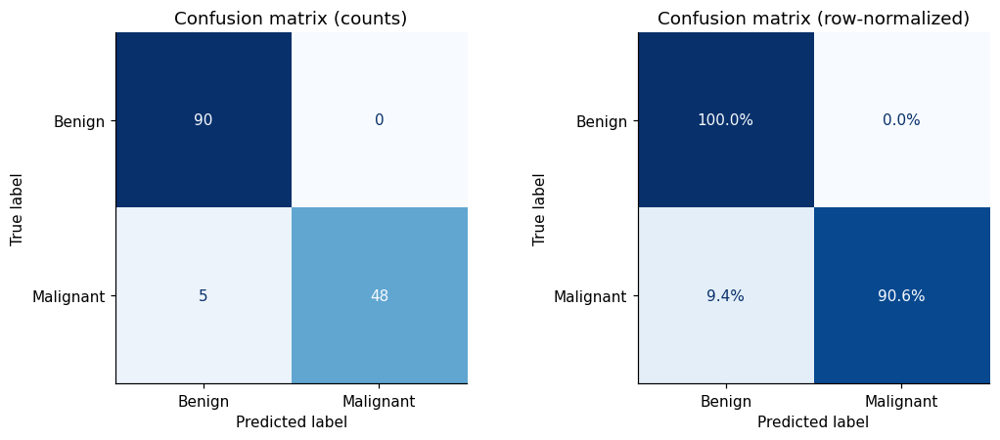
La curva ROC muestra el compromiso entre tasa de verdaderos positivos (recall) y tasa de falsos positivos al variar el umbral, y el AUC la resume en un número. Como complemento, la curva precision-recall es más informativa cuando la clase positiva es minoritaria. El punto marcado es el umbral por defecto del modelo.
# Conteos de la matriz de confusión con el orden de clases (0, 1)
tn, fp, fn, tp = confusion_matrix(y_test, y_pred, labels=[0, 1]).ravel()
fig, axes = plt.subplots(1, 2, figsize=(11, 4.4))
RocCurveDisplay.from_predictions(y_test, scores_test, name="Tuned SVM", plot_chance_level=True, ax=axes[0])
# Punto de operación del umbral por defecto en el plano ROC: (tasa de falsos positivos, recall)
axes[0].scatter([fp / (fp + tn)], [tp / (tp + fn)], color="#dd6b20", zorder=5, s=70, label="Default threshold")
axes[0].legend(loc="lower right")
axes[0].set_title("ROC curve (test set)")
# La línea de azar de la curva precision-recall es la prevalencia de la clase positiva
PrecisionRecallDisplay.from_predictions(y_test, scores_test, name="Tuned SVM", plot_chance_level=True, ax=axes[1])
# Punto de operación del umbral por defecto en el plano precision-recall: (recall, precision)
axes[1].scatter([tp / (tp + fn)], [tp / (tp + fp)], color="#dd6b20", zorder=5, s=70, label="Default threshold")
axes[1].legend(loc="lower left")
axes[1].set_title("Precision-recall curve (test set)")
plt.tight_layout()
plt.show()
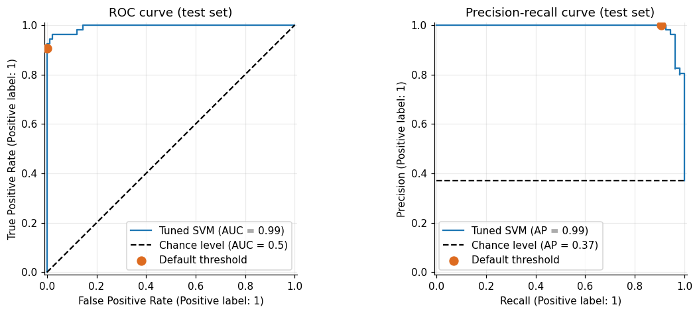
Elección del umbral sin contaminar la prueba
En diagnóstico, una falsa negativa cuesta más que una falsa positiva. El umbral por defecto no refleja esa asimetría, pero tampoco puede elegirse mirando la prueba. Lo elegimos con predicciones fuera de muestra (out-of-fold) obtenidas en el entrenamiento: entre los umbrales con recall de al menos 98%, tomamos el de mayor precision. Después lo aplicamos una sola vez a la prueba.
from sklearn.model_selection import cross_val_predict
# Puntuaciones fuera de muestra: cada observación de entrenamiento se puntúa con un modelo que no la vio
oof_scores = cross_val_predict(clone(best_model), X_train, y_train, cv=cv_fold, method="decision_function")
# Precision y recall para todos los umbrales posibles
prec, rec, thr = precision_recall_curve(y_train, oof_scores)
# Umbrales con al menos 98% de recall (se omite el último punto, que no tiene umbral)
ok = rec[:-1] >= 0.98
# Entre los admisibles, el de mayor precision
threshold = thr[ok][np.argmax(prec[:-1][ok])]
y_pred_thr = (scores_test >= threshold).astype(int)
# El umbral se elige solo con el entrenamiento; la prueba únicamente evalúa el resultado
compare = pd.DataFrame({"Default threshold (0.0)": metric_dict(y_true, y_pred, scores_test), f"Tuned threshold ({threshold:.2f})": metric_dict(y_true, y_pred_thr, scores_test)})
compare.round(3)
| Default threshold (0.0) | Tuned threshold (-0.53) | |
|---|---|---|
| Accuracy | 0.965 | 0.972 |
| Precision | 1.000 | 0.980 |
| Recall | 0.906 | 0.943 |
| F1 | 0.950 | 0.962 |
| ROC AUC | 0.994 | 0.994 |
| Average precision | 0.992 | 0.992 |
El AUC no cambia (no depende del umbral); cambia el punto de operación: el ajuste sacrifica algo de precision a cambio de menos tumores malignos sin detectar. Esta decisión es de costos clínicos, no estadística, y debe documentarse.
Interpretabilidad: importancia por permutación
Una SVM con kernel es una caja opaca: no hay coeficientes por variable. La importancia por permutación es una técnica agnóstica al modelo: mide cuánto cae el desempeño cuando se baraja una variable, rompiendo su relación con la etiqueta. Se calcula sobre datos no usados para entrenar.
Note
Con variables fuertemente correlacionadas (muy comunes aquí: radio, perímetro y área miden casi lo mismo), la importancia se reparte entre ellas y cada una parece menos importante de lo que es el grupo. Interprételo a nivel de grupo de variables cuando sea posible.
from sklearn.inspection import permutation_importance
# Se baraja cada variable 30 veces y se mide la caída de ROC AUC en la prueba
perm = permutation_importance(best_model, X_test, y_test, scoring="roc_auc", n_repeats=30, random_state=RANDOM_STATE, n_jobs=1)
# Las 10 variables con mayor caída media de desempeño
top = pd.DataFrame({"importance": perm.importances_mean, "std": perm.importances_std}, index=X_test.columns).sort_values("importance").tail(10)
fig, ax = plt.subplots(figsize=(7, 4.5))
ax.barh(top.index, top["importance"], xerr=top["std"], color="#2b6cb0", capsize=3)
ax.set_xlabel("Drop in ROC AUC when the feature is permuted")
ax.set_title("Permutation importance (top 10, test set)")
plt.show()
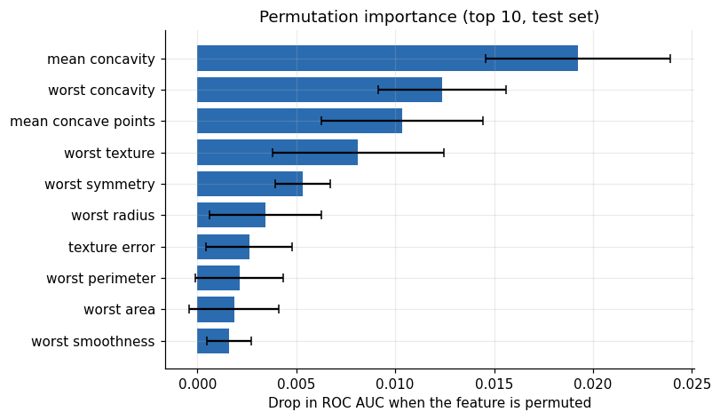
Parte 8. Síntesis
Puntos fuertes, puntos débiles y parámetros
Las SVM con kernel son modelos potentes que permiten fronteras de decisión complejas incluso con pocas características. Funcionan bien con datos de baja y alta dimensión, pero no escalan bien con el número de muestras: el entrenamiento cuesta entre \(O(n^2)\) y \(O(n^3)\) y la memoria crece con la matriz de kernel. Con decenas de miles de observaciones empiezan a ser costosas, y con cientos de miles requieren aproximaciones (Nyström, Random Fourier Features) o modelos lineales entrenados con gradiente estocástico.
Requieren preprocesamiento cuidadoso y ajuste de hiperparámetros. Por eso muchos practicantes prefieren hoy modelos basados en árboles (bosques aleatorios, gradient boosting), que exigen poco preprocesamiento. Además, las SVM son difíciles de interpretar: explicar una predicción concreta a un no especialista es complejo, y se recurre a técnicas agnósticas como la importancia por permutación.
Aun así, vale la pena probarlas cuando todas las características están en unidades y escalas similares o cuando el número de muestras es moderado.
Los parámetros clave son
C, la elección del kernel y los parámetros del kernel (gammaen RBF,degreeen el polinómico).gammaes la inversa de la anchura del kernel gaussiano. Valores grandes de cualquiera de los dos producen modelos más complejos, y sus mejores valores están correlacionados, por lo que deben ajustarse conjuntamente.
Lista de verificación de un protocolo sin fuga
El conjunto de prueba se apartó antes de todo análisis y se evaluó una sola vez.
El preprocesamiento vive dentro del
Pipeline, por lo que se reajusta en cada partición.Los hiperparámetros se eligieron con validación cruzada estratificada en el entrenamiento, con escalas logarítmicas para
Cygamma.El desempeño del procedimiento completo se estimó con validación cruzada anidada y se comparó con modelos de referencia.
Se diagnosticó el sobreajuste con curvas de validación y de aprendizaje y con la brecha entrenamiento menos validación.
Se reportaron varias métricas con intervalos de confianza, y el umbral se eligió con predicciones fuera de muestra.
6.20. Proyecto Integrador de Aprendizaje Automático#
Clasificación multiclase de cobertura forestal a gran escala: kernels, validación por bloques, incertidumbre calibrada y operación monitoreada
Contexto aplicado. El monitoreo de ecosistemas forestales requiere identificar el tipo de cobertura de cada parcela a partir de variables cartográficas. El modelo no es un fin en sí mismo: alimenta decisiones de conservación y ordenamiento territorial, donde los errores tienen costos asimétricos y las predicciones deben acompañarse de una medida confiable de incertidumbre.
Objetivo general. Diseñar, evaluar y operar un clasificador multiclase basado en máquinas de vectores de soporte, contrastando su costo computacional y su desempeño con aproximaciones de kernel y con un modelo de referencia basado en árboles, bajo un protocolo sin fuga de información, con validación que respete la estructura de los datos, probabilidades calibradas y un servicio reproducible y monitoreado.
Conjunto de datos: Forest CoverType (UCI)
Fuente: UCI Machine Learning Repository, Covertype. En
scikit-learnse descarga consklearn.datasets.fetch_covtype.Tamaño: 581 012 observaciones y 54 variables predictoras: 10 continuas (elevación, pendiente, orientación, distancias a hidrología, vías y focos de incendio, tres índices de sombreado), 4 indicadoras de área silvestre y 40 indicadoras de tipo de suelo.
Variable objetivo:
Cover_Type, siete clases codificadas de 1 a 7, con desbalance marcado (ver tabla).Partición original de la UCI: primeras 11 340 filas para entrenamiento, siguientes 3 780 para validación y las últimas 565 892 para prueba.
Código |
Cobertura |
Observaciones |
Proporción |
|---|---|---|---|
1 |
Spruce/Fir |
211 840 |
36.46% |
2 |
Lodgepole Pine |
283 301 |
48.76% |
3 |
Ponderosa Pine |
35 754 |
6.15% |
4 |
Cottonwood/Willow |
2 747 |
0.47% |
5 |
Aspen |
9 493 |
1.63% |
6 |
Douglas-fir |
17 367 |
2.99% |
7 |
Krummholz |
20 510 |
3.53% |
Preguntas de investigación
PI1 (escalabilidad). ¿Cómo escalan el tiempo de cómputo y el desempeño de la SVM con kernel exacta frente a las aproximaciones de kernel y a un modelo de boosting, al crecer el tamaño de la muestra?
PI2 (validación). ¿Cuánto se sobreestima el desempeño con una validación aleatoria frente a una validación por bloques, dada la autocorrelación espacial de los datos?
PI3 (incertidumbre). ¿Qué tan calibradas están las probabilidades y qué cobertura empírica logra la predicción conforme frente a su garantía nominal?
PI4 (operación). ¿Con qué rapidez y fiabilidad detecta el monitoreo un desplazamiento de covariables simulado?
Fases de trabajo
Fase 0. Protocolo y reproducibilidad.
Redactar antes de experimentar un protocolo con métrica primaria, particiones, semillas y criterios de decisión. Las conclusiones no pueden depender de decisiones tomadas después de ver los resultados de prueba.
Fijar el entorno (
requirements.lock), las semillas y un archivoconfig.yaml. Versionar los datos (DVC o suma SHA-256) y registrar cada ejecución con MLflow (parámetros, métricas, artefactos).
Fase 1. Análisis exploratorio e ingeniería de características.
Cuantificar el desbalance, la colinealidad y la presencia de valores atípicos por clase.
Construir variables con sentido físico: codificación circular de la orientación (\(\sin\) y \(\cos\)), distancia euclidiana a la hidrología a partir de sus componentes horizontal y vertical, y elevación ajustada por distancia vertical.
Escalar solo las variables continuas con
ColumnTransformer; las indicadoras no se escalan. Todo paso que aprenda de los datos vive dentro delPipeline.
Fase 2. Esquemas de validación.
Comparar tres esquemas: (a) estratificado aleatorio; (b) por bloques pseudo-espaciales, agrupando con
KMeans(\(k=20\)) sobre elevación y distancias a vías y focos de incendio, y validando conGroupKFold; (c) la partición original de la UCI.Cuantificar la diferencia de desempeño entre (a) y (b) con su incertidumbre. Discutir por qué la validación aleatoria es optimista cuando observaciones vecinas son casi idénticas.
Fase 3. Modelado y escalabilidad.
SVM exacta (
SVC) con kernels lineal, RBF y polinómico sobre submuestras estratificadas de \(n\in\{2\,000;\ 5\,000;\ 10\,000;\ 20\,000\}\). Registrar tiempo de ajuste, tiempo de predicción y memoria.Estimar el exponente empírico de complejidad ajustando \(\log t = a + b\log n\) y comparar \(b\) con la teoría (\(b\in[2,3]\)).
Aproximaciones de kernel sobre los datos completos:
Nystroemcon \(m\in\{100;\ 300;\ 1\,000\}\) componentes yRBFSampler, seguidas deLinearSVCoSGDClassifier. Medir el compromiso entre \(m\), tiempo y desempeño.Referencias: regresión logística multinomial y
HistGradientBoostingClassifier.Estrategias multiclase y desbalance: uno contra uno (nativa de
SVC) frente a uno contra el resto (OneVsRestClassifier), con y sinclass_weight="balanced".
Fase 4. Optimización de hiperparámetros.
Usar
GridSearchCVsolo donde el espacio sea pequeño (kernel lineal). Para los demás, búsqueda aleatoria con reducción sucesiva (HalvingRandomSearchCV) u Optuna con 60 evaluaciones, con distribuciones log-uniformes paraCygamma.Estimar el desempeño con validación cruzada anidada (5 particiones externas por 3 internas) sobre la muestra, y reportar la varianza entre particiones, no solo la media.
Fase 5. Evaluación.
Métricas primarias: macro-F1 y balanced accuracy, porque la exactitud global premia ignorar las clases raras. Secundarias: coeficiente de correlación de Matthews, recall por clase y log-loss.
Curvas por clase: ROC y precision-recall en esquema uno contra el resto, con AUC macro y micro (
roc_auc_score(..., multi_class="ovr")). Matriz de confusión normalizada por filas.Incertidumbre de las métricas: intervalos de confianza del 95% por bootstrap (\(B=1\,000\)).
Comparación estadística entre modelos: prueba \(t\) corregida de Nadeau y Bengio sobre validación cruzada repetida, $\( t=\frac{\bar d}{\sqrt{\left(\frac{1}{k}+\frac{n_{\text{test}}}{n_{\text{train}}}\right)\hat\sigma_d^{2}}}, \)\( donde \)d\( son las diferencias de desempeño por partición y \)k$ su número, y prueba de McNemar sobre el conjunto de prueba. Reportar también el tamaño del efecto.
Fase 6. Calibración e incertidumbre (extensión).
Calibrar con
CalibratedClassifierCV(sigmoide e isotónica,cv=5). Evaluar con diagramas de fiabilidad por clase, error de calibración esperado (ECE, 15 intervalos) y puntaje de Brier multiclase.Implementar predicción conforme dividida (\(\alpha=0.1\)). Con puntajes de no conformidad \(s_i=1-\hat p(y_i\mid x_i)\) sobre un conjunto de calibración independiente, y \(\hat q\) el cuantil de orden \(\lceil (n+1)(1-\alpha)\rceil/n\), el conjunto de predicción es $\( \mathcal{C}_{\alpha}(x)=\left\{k:\ \hat p(k\mid x)\ \ge\ 1-\hat q\right\}. \)$
Reportar cobertura empírica global y por clase, y tamaño promedio de los conjuntos. Discutir por qué la cobertura marginal no implica cobertura condicional en las clases raras.
Fase 7. Decisión con costos (extensión).
Definir y justificar una matriz de costos \(C_{kj}\) (costo de predecir \(k\) cuando la clase real es \(j\)) con criterio ecológico y de gestión.
Comparar la regla por máxima probabilidad con la regla de mínimo riesgo esperado $\( \hat y(x)=\arg\min_{k}\ \sum_{j=1}^{7} C_{kj}\ \hat p(j\mid x), \)$ reportando el costo esperado de cada una.
Fase 8. Interpretabilidad (extensión).
Importancia por permutación agrupada por familias de variables (topografía, hidrología, iluminación, suelos, áreas silvestres), para manejar la colinealidad.
Dependencia parcial e ICE para la elevación y explicaciones locales con SHAP (
KernelExplainercon 100 puntos de referencia) sobre 200 instancias. Discutir la estabilidad de las explicaciones entre semillas.
Fase 9. Ingeniería y despliegue. Ver la sección de arquitectura más abajo.
Fase 10. Monitoreo y deriva (extensión).
Implementar el índice de estabilidad poblacional (PSI), la prueba de Kolmogórov-Smirnov por variable (con corrección por pruebas múltiples) y la divergencia de Jensen-Shannon entre la distribución de clases predichas y la de referencia.
Simular una deriva: desplazar la elevación en \(\delta\in\{0.1;\ 0.25;\ 0.5\}\) desviaciones estándar y alterar las proporciones de clase. Medir potencia de detección y tiempo hasta la alerta con ventanas de 500 peticiones y umbral de PSI de 0.2.
Definir una política de alertas y de reentrenamiento con criterios explícitos.
Organización del trabajo y evaluación
Núcleo obligatorio: fases 0 a 5 y fase 9. Extensiones: cada equipo elige dos entre las fases 6, 7, 8 y 10, y responde las preguntas de investigación que les corresponden.
Entregables:
Informe técnico con el protocolo de la fase 0, resultados con incertidumbre, análisis de errores y limitaciones del estudio.
Repositorio reproducible con código modular,
config.yaml, semillas y entorno fijado.Notebook con el flujo completo: exploración, modelado, validación anidada y evaluación.
API (FastAPI) con
/healthy/predict, contenerizada y con CI funcional.Dashboard (Dash/Plotly) con carga de archivos por lotes, probabilidades por clase, conjunto de predicción conforme (si se eligió la fase 6) y panel de deriva (si se eligió la fase 10).
Tarjeta del modelo (model card) con uso previsto, datos, métricas por clase, limitaciones y consideraciones éticas.
Criterio |
Peso |
|---|---|
Rigor metodológico y ausencia de fuga de información |
20% |
Diseño experimental y análisis de escalabilidad |
15% |
Evaluación estadística y comparación entre modelos |
15% |
Ingeniería, pruebas y despliegue reproducible |
15% |
Calibración e incertidumbre |
10% |
Interpretabilidad |
10% |
Monitoreo y análisis de deriva |
10% |
Comunicación y reproducibilidad del informe |
5% |
Arquitectura y código de referencia
La estructura sugerida separa código de biblioteca (
src/), experimentos (notebooks/), artefactos versionados (artifacts/) y pruebas (tests/). Los archivos de abajo son puntos de partida que el equipo debe adaptar y extender.
forest-cover-svm/
├── config/
│ └── config.yaml
├── data/ # versionado con DVC, no se sube a Git
├── notebooks/
│ ├── 01_eda.ipynb
│ └── 02_modeling.ipynb
├── src/
│ └── forest/
│ ├── __init__.py
│ ├── features.py # ingeniería de características
│ ├── validation.py # esquemas de validación y bloques
│ ├── models.py # pipelines y búsquedas
│ ├── calibration.py # calibración y predicción conforme
│ ├── drift.py # PSI, KS, Jensen-Shannon
│ └── api.py # servicio de inferencia
├── app/
│ └── dashboard.py
├── artifacts/
│ ├── model.joblib
│ ├── feature_names.json
│ └── model_card.md
├── tests/
│ └── test_contract.py
├── .github/workflows/ci.yml
├── Dockerfile
├── requirements.lock
└── README.md
src/forest/api.py: servicio de inferencia. Carga el modelo una sola vez al arrancar, valida el esquema de entrada (54 valores por fila, máximo 1 000 filas) y devuelve probabilidades además de la clase. El modelo debe exponerpredict_proba(por ejemplo, trasCalibratedClassifierCV).
# Importa el administrador de contexto que permite cargar el modelo una sola vez al iniciar el servicio
from contextlib import asynccontextmanager
# Importa json para leer la lista ordenada de nombres de variables
import json
# Importa Path para manejar rutas de archivos de forma portable
from pathlib import Path
# Importa joblib para cargar el modelo serializado
import joblib
# Importa pandas para construir la tabla con los nombres de columna que espera el pipeline
import pandas as pd
# Importa el framework web
from fastapi import FastAPI
# Importa las herramientas de validación del esquema de entrada
from pydantic import BaseModel, Field, field_validator
# Define la carpeta donde viven los artefactos versionados del modelo
ARTIFACTS = Path("artifacts")
# Crea un diccionario que guardará el modelo y los nombres de variables ya cargados
state = {}
# Declara el ciclo de vida del servicio: qué ocurre al arrancar y al apagar
@asynccontextmanager
async def lifespan(app: FastAPI):
# Carga el modelo una sola vez al arrancar, no en cada petición
state["model"] = joblib.load(ARTIFACTS / "model.joblib")
# Carga los nombres de las 54 variables en el mismo orden del entrenamiento
state["features"] = json.loads((ARTIFACTS / "feature_names.json").read_text())
# Cede el control al servicio mientras esté activo
yield
# Libera los objetos al apagar
state.clear()
# Crea la aplicación declarando título, versión y ciclo de vida
app = FastAPI(title="Forest cover API", version="1.0.0", lifespan=lifespan)
# Define el esquema de entrada: un lote de filas con un número fijo de valores
class Batch(BaseModel):
# Exige entre 1 y 1000 filas de números decimales por petición
instances: list[list[float]] = Field(min_length=1, max_length=1000)
# Registra una validación adicional sobre el campo instances
@field_validator("instances")
# Declara que el método recibe la clase y no una instancia
@classmethod
def check_width(cls, rows):
# Comprueba que todas las filas tengan 54 valores, el número de variables del modelo
if any(len(r) != 54 for r in rows):
# Rechaza la petición con un mensaje claro (FastAPI responde con código 422)
raise ValueError("Each instance must contain exactly 54 values")
# Devuelve las filas ya validadas
return rows
# Declara un endpoint de salud que usan Docker y los balanceadores para saber si el servicio vive
@app.get("/health")
def health():
# Responde con un estado fijo
return {"status": "ok"}
# Declara el endpoint de predicción por lotes
@app.post("/predict")
def predict(batch: Batch):
# Construye la tabla con los nombres de columna que espera el pipeline
X = pd.DataFrame(batch.instances, columns=state["features"])
# Calcula la probabilidad de cada clase para cada fila
proba = state["model"].predict_proba(X)
# Toma como clase predicha la de mayor probabilidad
pred = state["model"].classes_[proba.argmax(axis=1)]
# Devuelve clases predichas, probabilidades y el orden de las clases como listas serializables
return {"cover_type": pred.tolist(), "probabilities": proba.round(4).tolist(), "classes": state["model"].classes_.tolist()}
tests/test_contract.py: pruebas automáticas. Incluyen una prueba de no fuga (el escalador aprende solo del entrenamiento) y una prueba de contrato de la API. Para el CI,tests/conftest.pypuede generar un modelo de juguete y escribirlo enartifacts/, de modo que las pruebas no dependan de descargar el modelo real.
# Importa NumPy para generar datos sintéticos
import numpy as np
# Importa el cliente de pruebas de FastAPI
from fastapi.testclient import TestClient
# Importa el contenedor que encadena preprocesamiento y modelo
from sklearn.pipeline import Pipeline
# Importa el escalador cuya ausencia de fuga se quiere verificar
from sklearn.preprocessing import StandardScaler
# Importa el clasificador de vectores de soporte
from sklearn.svm import SVC
# Importa la aplicación que se va a probar
from src.forest.api import app
# Prueba de no fuga: el escalador debe aprender solo de los datos de entrenamiento
def test_scaler_uses_only_training_data():
# Crea un generador aleatorio con semilla fija
rng = np.random.default_rng(0)
# Crea un entrenamiento centrado en 0 y una prueba deliberadamente centrada en 10
X_tr, X_te = rng.normal(0, 1, (100, 3)), rng.normal(10, 1, (50, 3))
# Crea etiquetas alternadas para el entrenamiento
y_tr = np.tile([0, 1], 50)
# Ajusta el pipeline usando solo el entrenamiento
pipe = Pipeline([("scaler", StandardScaler()), ("svc", SVC())]).fit(X_tr, y_tr)
# Verifica que la media aprendida es la del entrenamiento y no la de los datos de prueba
assert np.allclose(pipe.named_steps["scaler"].mean_, X_tr.mean(axis=0))
# Prueba de contrato: una fila con número incorrecto de variables debe rechazarse
def test_rejects_wrong_width():
# Abre el cliente dentro de un contexto para ejecutar el ciclo de vida, que carga el modelo
with TestClient(app) as client:
# Envía una fila con solo 3 valores en lugar de 54
r = client.post("/predict", json={"instances": [[1.0, 2.0, 3.0]]})
# Verifica que el servicio responde 422 (entrada inválida)
assert r.status_code == 422
src/forest/drift.py: índice de estabilidad poblacional. Compara la distribución de una variable continua en producción con la de referencia. Convención habitual: \(\text{PSI}<0.1\) estable, entre \(0.1\) y \(0.25\) cambio moderado, y mayor que \(0.25\) cambio significativo. $\( \text{PSI}=\sum_{b=1}^{B}\left(p_b^{\text{act}}-p_b^{\text{ref}}\right)\ln\frac{p_b^{\text{act}}}{p_b^{\text{ref}}} \)$
# Importa NumPy para cuantiles, histogramas y operaciones vectorizadas
import numpy as np
# Define la función que calcula el PSI entre una muestra de referencia y una muestra actual
def psi(reference, current, bins=10, eps=1e-6):
# Calcula los bordes de los intervalos como cuantiles de la muestra de referencia
edges = np.unique(np.quantile(reference, np.linspace(0, 1, bins + 1)))
# Extiende el primer y el último borde al infinito para no perder observaciones fuera del rango de referencia
edges[0], edges[-1] = -np.inf, np.inf
# Calcula la proporción de la referencia que cae en cada intervalo
p_ref = np.histogram(reference, bins=edges)[0] / len(reference)
# Calcula la proporción de la muestra actual que cae en cada intervalo
p_cur = np.histogram(current, bins=edges)[0] / len(current)
# Evita ceros que harían indefinido el logaritmo
p_ref, p_cur = np.clip(p_ref, eps, None), np.clip(p_cur, eps, None)
# Aplica la fórmula del PSI y devuelve un número decimal
return float(np.sum((p_cur - p_ref) * np.log(p_cur / p_ref)))
Dockerfile: imagen mínima y sin privilegios. Usa el archivo de dependencias fijadas y un usuario no administrador, e incluye una comprobación de salud.
# Parte de una imagen oficial ligera de Python
FROM python:3.11-slim
# Evita archivos .pyc y hace que los registros salgan sin demora
ENV PYTHONDONTWRITEBYTECODE=1 PYTHONUNBUFFERED=1
# Define la carpeta de trabajo dentro del contenedor
WORKDIR /srv
# Copia primero las dependencias para aprovechar la caché de capas de Docker
COPY requirements.lock .
# Instala exactamente las versiones fijadas
RUN pip install --no-cache-dir -r requirements.lock
# Copia el código de la biblioteca y los artefactos del modelo
COPY src/ ./src/
COPY artifacts/ ./artifacts/
# Crea un usuario sin privilegios y cambia a él
RUN useradd --create-home appuser
USER appuser
# Documenta el puerto del servicio
EXPOSE 8000
# Declara la comprobación de salud que Docker ejecuta periódicamente
HEALTHCHECK --interval=30s --timeout=5s CMD python -c "import urllib.request as u; u.urlopen('http://localhost:8000/health')" || exit 1
# Arranca el servidor de la API
CMD ["uvicorn", "src.forest.api:app", "--host", "0.0.0.0", "--port", "8000"]
.github/workflows/ci.yml: integración continua. Verifica calidad (ruff,mypy), pruebas con cobertura mínima y una prueba de humo de la imagen Docker. La versión de Python va entre comillas: sin ellas, YAML interpreta3.10como el número3.1.
name: CI
on:
push:
branches: [main]
pull_request:
branches: [main]
jobs:
quality:
runs-on: ubuntu-latest
steps:
# Descarga el repositorio
- uses: actions/checkout@v4
# Instala Python con caché de dependencias
- uses: actions/setup-python@v5
with:
python-version: "3.11"
cache: pip
# Instala dependencias fijadas y herramientas de calidad
- run: pip install -r requirements.lock ruff mypy pytest pytest-cov httpx
# Revisa estilo y errores comunes
- run: ruff check src tests
# Revisa tipos
- run: mypy src
# Ejecuta pruebas y falla si la cobertura baja de 80%
- run: pytest --cov=src --cov-fail-under=80
docker:
needs: quality
runs-on: ubuntu-latest
steps:
- uses: actions/checkout@v4
# Construye la imagen
- run: docker build -t forest-api:ci .
# Levanta el contenedor y espera a que responda /health
- name: Smoke test
run: |
docker run -d --name api -p 8000:8000 forest-api:ci
for i in $(seq 1 20); do curl -fs http://localhost:8000/health && exit 0; sleep 2; done
docker logs api
exit 1
Criterios de calidad que se revisarán en el repositorio
Ninguna transformación aprendida fuera del
Pipeline, y una prueba automática que lo verifique.Semillas y entorno fijados: otro equipo debe poder reproducir las cifras del informe con un solo comando.
Toda cifra del informe viene con su incertidumbre (intervalo o desviación entre particiones) y con el esquema de validación que la produjo.
Las limitaciones se declaran: por ejemplo, que los bloques pseudo-espaciales son una aproximación porque el conjunto no incluye coordenadas geográficas.